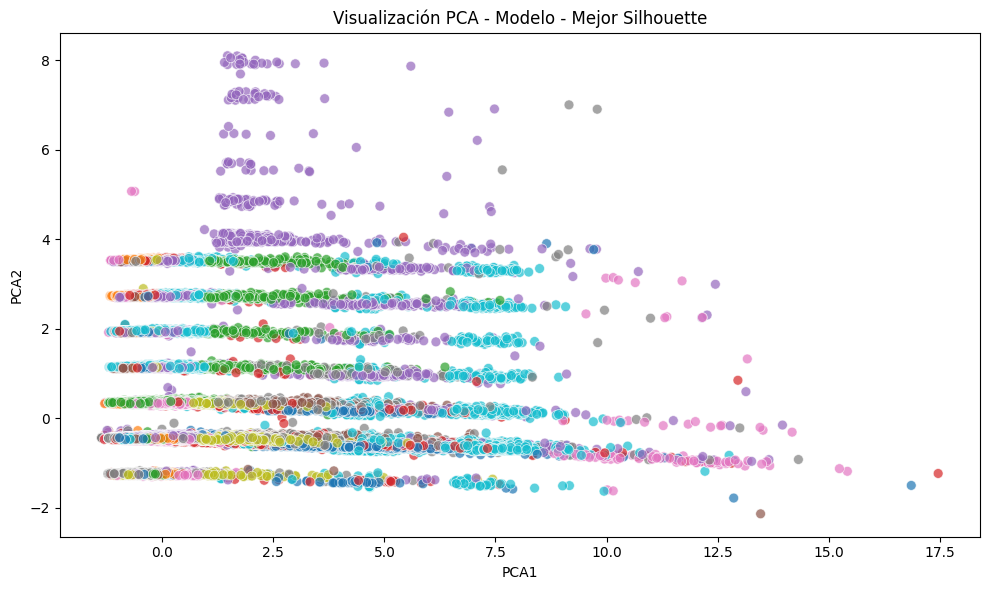
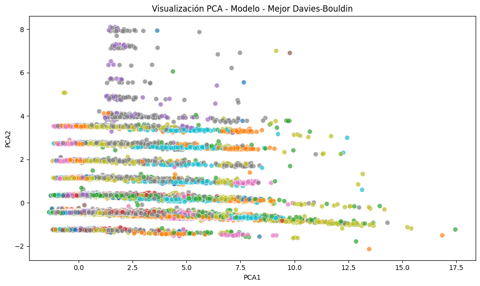
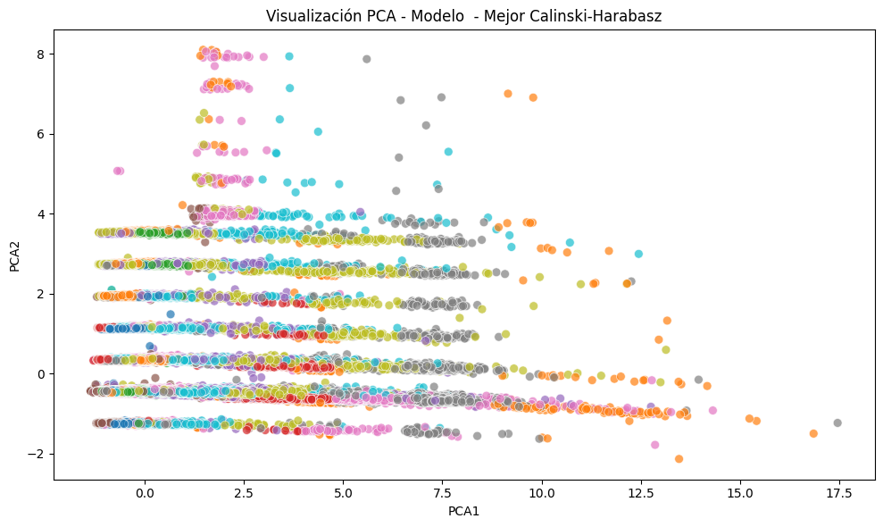

Modelo Original#
Librerías#
import numpy as np
import tensorflow as tf
from tensorflow import keras
from minisom import MiniSom
from sklearn.cluster import KMeans
from sklearn.metrics import silhouette_score, davies_bouldin_score, calinski_harabasz_score
from sklearn.preprocessing import StandardScaler
from sklearn.datasets import load_digits
import pickle
from itertools import product
import pandas as pd
import plotly.graph_objects as go
import os
import time
from tqdm import tqdm
import pandas as pd
import matplotlib.pyplot as plt
import seaborn as sns
from sklearn.decomposition import PCA
Modelo Original - Propuesto#
Se implementó un modelo híbrido de aprendizaje no supervisado compuesto por un autoencoder profundo seguido de un algoritmo de agrupamiento basado en Self-Organizing Maps (SOM).
with open(r"C:\Users\kcarrascal\Downloads\Machine_Learning\X_sample.pkl", 'rb') as f:
data = pickle.load(f)
---------------------------------------------------------------------------
FileNotFoundError Traceback (most recent call last)
Cell In[2], line 1
----> 1 with open(r"C:\Users\kcarrascal\Downloads\Machine_Learning\X_sample.pkl", 'rb') as f:
2 data = pickle.load(f)
File ~\miniconda3\envs\ml_venv\lib\site-packages\IPython\core\interactiveshell.py:310, in _modified_open(file, *args, **kwargs)
303 if file in {0, 1, 2}:
304 raise ValueError(
305 f"IPython won't let you open fd={file} by default "
306 "as it is likely to crash IPython. If you know what you are doing, "
307 "you can use builtins' open."
308 )
--> 310 return io_open(file, *args, **kwargs)
FileNotFoundError: [Errno 2] No such file or directory: 'C:\\Users\\kcarrascal\\Downloads\\Machine_Learning\\X_sample.pkl'
#parametros
params = {
# 'Encoding_Dim' : list(np.arange(2,int(data.shape[1]/2)+1)),
'Encoding_Dim' : [2,5,10],
'Layers' : [2, 4],
'Neurons' : [64, 256],
'Optimizer' : ["adam", "rmsprop"],
'Epochs' : [100,500],
'Sigma' : [0.1, 1],
'LR' : [0.01, 0.1],
'Activation' : ['relu'],
'Loss' : ["mse"],
'BS' : [64],
'X' : [10],
'Y' : [10],
'Iterations' : [1000]
}
params_idx={j:i for i,j in enumerate(params.keys())}
# Ruta para guardar resultados CSV
resultados_csv_path = r"C:\Users\Downloads\resultados_som.csv"
# Cargar backup si existe
try:
with open(r"C:\Users\Downloads\Cluster.pkl", 'rb') as f:
backup = pickle.load(f)
except:
backup = {}
results = []
scaler = StandardScaler()
data_scaled = scaler.fit_transform(data)
# Generar combinaciones
combinaciones = list(product(*params.values()))
total_iter = len(combinaciones)
start_total = time.time()
# Iterar con barra de progreso
with tqdm(total=total_iter, desc="Entrenando modelos") as pbar:
for idx, i in enumerate(combinaciones):
if i in backup:
pbar.update(1)
continue
try:
start_iter = time.time()
print(f"\n▶ Iteración {idx+1}/{total_iter} - Configuración: {i}")
# Dimensiones
input_dim = data.shape[1]
encoding_dim = i[params_idx['Encoding_Dim']]
# Encoder
enc_layers = [
keras.layers.Dense(i[params_idx['Neurons']], activation=i[params_idx['Activation']], input_shape=(input_dim,))
for _ in range(i[params_idx['Layers']])
]
enc_layers.append(keras.layers.Dense(encoding_dim, activation='relu'))
encoder = keras.Sequential(enc_layers)
# Decoder
dec_layers = [
keras.layers.Dense(i[params_idx['Neurons']], activation=i[params_idx['Activation']], input_shape=(encoding_dim,))
for _ in range(i[params_idx['Layers']])
]
dec_layers.append(keras.layers.Dense(input_dim, activation='sigmoid'))
decoder = keras.Sequential(dec_layers)
# Autoencoder
autoencoder = keras.Sequential([encoder, decoder])
autoencoder.compile(optimizer=i[params_idx['Optimizer']], loss=i[params_idx['Loss']])
autoencoder.fit(data_scaled, data_scaled, epochs=i[params_idx['Epochs']], batch_size=i[params_idx['BS']], verbose=0)
# Codificación
encoded_data = encoder.predict(data_scaled)
# SOM
som = MiniSom(i[params_idx['X']], i[params_idx['Y']], encoding_dim,
sigma=i[params_idx['Sigma']], learning_rate=i[params_idx['LR']])
som.random_weights_init(encoded_data)
som.train_random(encoded_data, i[params_idx['Iterations']])
# Etiquetas
som_labels = np.array([som.winner(x) for x in encoded_data])
som_clusters = np.array([j[0] * i[params_idx['X']] + j[1] for j in som_labels])
dummy= pd.DataFrame(som_clusters, columns=['Clus'])
n_clus=len(dummy['Clus'].unique())
dummy = dummy.groupby('Clus').agg({'Clus':'count'})
dummy = (dummy/dummy.sum())['Clus'].values
# Evaluación
silhouette_combined = silhouette_score(encoded_data, som_clusters)
davies_bouldin_combined = davies_bouldin_score(encoded_data, som_clusters)
calinski_harabasz_combined = calinski_harabasz_score(encoded_data, som_clusters)
# Guardar modelos .h5
name = f"encdim{encoding_dim}_layers{i[params_idx['Layers']]}_neurons{i[params_idx['Neurons']]}"
encoder.save(f"encoder_{name}.h5")
autoencoder.save(f"autoencoder_{name}.h5")
# Registro de resultados
row = i + (silhouette_combined, davies_bouldin_combined, calinski_harabasz_combined) + (n_clus,dummy)
backup[i] = row
results.append(row)
# Guardar backup .pkl
with open(r"C:\Users\sherazoa\Downloads\Cluster.pkl", 'wb') as handle:
pickle.dump(backup, handle, protocol=pickle.HIGHEST_PROTOCOL)
# Guardar resultados parciales .csv
columnas = list(params.keys()) + ['silhouette', 'davies_bouldin', 'calinski_harabasz'] + ['Clusters', 'Distribución']
df_resultados = pd.DataFrame(results, columns=columnas)
df_resultados.to_csv(resultados_csv_path, index=False)
# Tiempo iteración
elapsed = round(time.time() - start_iter, 2)
print(f"⏱️ Iteración completada en {elapsed} segundos")
except Exception as e:
print(f"❌ Error en la configuración {i}: {e}")
pbar.update(1)
# Tiempo total
total_time = round(time.time() - start_total, 2)
print(f"\n✅ Ejecución finalizada en {total_time} segundos")
C:\Users\sherazoa\AppData\Local\Temp\ipykernel_1700\4195772582.py:9: DeprecationWarning: numpy.core.numeric is deprecated and has been renamed to numpy._core.numeric. The numpy._core namespace contains private NumPy internals and its use is discouraged, as NumPy internals can change without warning in any release. In practice, most real-world usage of numpy.core is to access functionality in the public NumPy API. If that is the case, use the public NumPy API. If not, you are using NumPy internals. If you would still like to access an internal attribute, use numpy._core.numeric._frombuffer.
backup = pickle.load(f)
Entrenando modelos: 0%| | 0/64 [00:00<?, ?it/s]
▶ Iteración 2/64 - Configuración: (5, 2, 64, 'adam', 100, 0.1, 0.1, 'relu', 'mse', 64, 10, 10, 1000)
4688/4688 ━━━━━━━━━━━━━━━━━━━━ 2s 370us/step
WARNING:absl:You are saving your model as an HDF5 file via `model.save()` or `keras.saving.save_model(model)`. This file format is considered legacy. We recommend using instead the native Keras format, e.g. `model.save('my_model.keras')` or `keras.saving.save_model(model, 'my_model.keras')`.
WARNING:absl:You are saving your model as an HDF5 file via `model.save()` or `keras.saving.save_model(model)`. This file format is considered legacy. We recommend using instead the native Keras format, e.g. `model.save('my_model.keras')` or `keras.saving.save_model(model, 'my_model.keras')`.
Entrenando modelos: 3%|▎ | 2/64 [07:20<3:47:29, 220.15s/it]
⏱️ Iteración completada en 440.3 segundos
▶ Iteración 3/64 - Configuración: (5, 2, 64, 'adam', 100, 1, 0.01, 'relu', 'mse', 64, 10, 10, 1000)
4688/4688 ━━━━━━━━━━━━━━━━━━━━ 2s 380us/step
WARNING:absl:You are saving your model as an HDF5 file via `model.save()` or `keras.saving.save_model(model)`. This file format is considered legacy. We recommend using instead the native Keras format, e.g. `model.save('my_model.keras')` or `keras.saving.save_model(model, 'my_model.keras')`.
WARNING:absl:You are saving your model as an HDF5 file via `model.save()` or `keras.saving.save_model(model)`. This file format is considered legacy. We recommend using instead the native Keras format, e.g. `model.save('my_model.keras')` or `keras.saving.save_model(model, 'my_model.keras')`.
Entrenando modelos: 5%|▍ | 3/64 [14:33<5:14:13, 309.08s/it]
⏱️ Iteración completada en 433.59 segundos
▶ Iteración 4/64 - Configuración: (5, 2, 64, 'adam', 100, 1, 0.1, 'relu', 'mse', 64, 10, 10, 1000)
4688/4688 ━━━━━━━━━━━━━━━━━━━━ 2s 389us/step
WARNING:absl:You are saving your model as an HDF5 file via `model.save()` or `keras.saving.save_model(model)`. This file format is considered legacy. We recommend using instead the native Keras format, e.g. `model.save('my_model.keras')` or `keras.saving.save_model(model, 'my_model.keras')`.
WARNING:absl:You are saving your model as an HDF5 file via `model.save()` or `keras.saving.save_model(model)`. This file format is considered legacy. We recommend using instead the native Keras format, e.g. `model.save('my_model.keras')` or `keras.saving.save_model(model, 'my_model.keras')`.
Entrenando modelos: 6%|▋ | 4/64 [21:45<5:54:57, 354.96s/it]
⏱️ Iteración completada en 432.03 segundos
▶ Iteración 5/64 - Configuración: (5, 2, 64, 'adam', 500, 0.1, 0.01, 'relu', 'mse', 64, 10, 10, 1000)
4688/4688 ━━━━━━━━━━━━━━━━━━━━ 2s 381us/step
WARNING:absl:You are saving your model as an HDF5 file via `model.save()` or `keras.saving.save_model(model)`. This file format is considered legacy. We recommend using instead the native Keras format, e.g. `model.save('my_model.keras')` or `keras.saving.save_model(model, 'my_model.keras')`.
WARNING:absl:You are saving your model as an HDF5 file via `model.save()` or `keras.saving.save_model(model)`. This file format is considered legacy. We recommend using instead the native Keras format, e.g. `model.save('my_model.keras')` or `keras.saving.save_model(model, 'my_model.keras')`.
Entrenando modelos: 8%|▊ | 5/64 [41:51<10:40:00, 650.85s/it]
⏱️ Iteración completada en 1205.95 segundos
▶ Iteración 6/64 - Configuración: (5, 2, 64, 'adam', 500, 0.1, 0.1, 'relu', 'mse', 64, 10, 10, 1000)
4688/4688 ━━━━━━━━━━━━━━━━━━━━ 2s 384us/step
WARNING:absl:You are saving your model as an HDF5 file via `model.save()` or `keras.saving.save_model(model)`. This file format is considered legacy. We recommend using instead the native Keras format, e.g. `model.save('my_model.keras')` or `keras.saving.save_model(model, 'my_model.keras')`.
WARNING:absl:You are saving your model as an HDF5 file via `model.save()` or `keras.saving.save_model(model)`. This file format is considered legacy. We recommend using instead the native Keras format, e.g. `model.save('my_model.keras')` or `keras.saving.save_model(model, 'my_model.keras')`.
Entrenando modelos: 9%|▉ | 6/64 [1:01:51<13:25:15, 833.02s/it]
⏱️ Iteración completada en 1199.77 segundos
▶ Iteración 7/64 - Configuración: (5, 2, 64, 'adam', 500, 1, 0.01, 'relu', 'mse', 64, 10, 10, 1000)
4688/4688 ━━━━━━━━━━━━━━━━━━━━ 2s 374us/step
WARNING:absl:You are saving your model as an HDF5 file via `model.save()` or `keras.saving.save_model(model)`. This file format is considered legacy. We recommend using instead the native Keras format, e.g. `model.save('my_model.keras')` or `keras.saving.save_model(model, 'my_model.keras')`.
WARNING:absl:You are saving your model as an HDF5 file via `model.save()` or `keras.saving.save_model(model)`. This file format is considered legacy. We recommend using instead the native Keras format, e.g. `model.save('my_model.keras')` or `keras.saving.save_model(model, 'my_model.keras')`.
Entrenando modelos: 11%|█ | 7/64 [1:21:44<15:01:22, 948.82s/it]
⏱️ Iteración completada en 1193.05 segundos
▶ Iteración 8/64 - Configuración: (5, 2, 64, 'adam', 500, 1, 0.1, 'relu', 'mse', 64, 10, 10, 1000)
4688/4688 ━━━━━━━━━━━━━━━━━━━━ 2s 368us/step
WARNING:absl:You are saving your model as an HDF5 file via `model.save()` or `keras.saving.save_model(model)`. This file format is considered legacy. We recommend using instead the native Keras format, e.g. `model.save('my_model.keras')` or `keras.saving.save_model(model, 'my_model.keras')`.
WARNING:absl:You are saving your model as an HDF5 file via `model.save()` or `keras.saving.save_model(model)`. This file format is considered legacy. We recommend using instead the native Keras format, e.g. `model.save('my_model.keras')` or `keras.saving.save_model(model, 'my_model.keras')`.
Entrenando modelos: 12%|█▎ | 8/64 [1:41:51<16:01:20, 1030.01s/it]
⏱️ Iteración completada en 1206.72 segundos
▶ Iteración 9/64 - Configuración: (5, 2, 64, 'rmsprop', 100, 0.1, 0.01, 'relu', 'mse', 64, 10, 10, 1000)
4688/4688 ━━━━━━━━━━━━━━━━━━━━ 2s 386us/step
WARNING:absl:You are saving your model as an HDF5 file via `model.save()` or `keras.saving.save_model(model)`. This file format is considered legacy. We recommend using instead the native Keras format, e.g. `model.save('my_model.keras')` or `keras.saving.save_model(model, 'my_model.keras')`.
WARNING:absl:You are saving your model as an HDF5 file via `model.save()` or `keras.saving.save_model(model)`. This file format is considered legacy. We recommend using instead the native Keras format, e.g. `model.save('my_model.keras')` or `keras.saving.save_model(model, 'my_model.keras')`.
Entrenando modelos: 14%|█▍ | 9/64 [1:48:57<12:52:29, 842.72s/it]
⏱️ Iteración completada en 426.26 segundos
▶ Iteración 10/64 - Configuración: (5, 2, 64, 'rmsprop', 100, 0.1, 0.1, 'relu', 'mse', 64, 10, 10, 1000)
4688/4688 ━━━━━━━━━━━━━━━━━━━━ 2s 384us/step
WARNING:absl:You are saving your model as an HDF5 file via `model.save()` or `keras.saving.save_model(model)`. This file format is considered legacy. We recommend using instead the native Keras format, e.g. `model.save('my_model.keras')` or `keras.saving.save_model(model, 'my_model.keras')`.
WARNING:absl:You are saving your model as an HDF5 file via `model.save()` or `keras.saving.save_model(model)`. This file format is considered legacy. We recommend using instead the native Keras format, e.g. `model.save('my_model.keras')` or `keras.saving.save_model(model, 'my_model.keras')`.
Entrenando modelos: 16%|█▌ | 10/64 [1:56:04<10:43:28, 714.98s/it]
⏱️ Iteración completada en 426.75 segundos
▶ Iteración 11/64 - Configuración: (5, 2, 64, 'rmsprop', 100, 1, 0.01, 'relu', 'mse', 64, 10, 10, 1000)
4688/4688 ━━━━━━━━━━━━━━━━━━━━ 2s 373us/step
WARNING:absl:You are saving your model as an HDF5 file via `model.save()` or `keras.saving.save_model(model)`. This file format is considered legacy. We recommend using instead the native Keras format, e.g. `model.save('my_model.keras')` or `keras.saving.save_model(model, 'my_model.keras')`.
WARNING:absl:You are saving your model as an HDF5 file via `model.save()` or `keras.saving.save_model(model)`. This file format is considered legacy. We recommend using instead the native Keras format, e.g. `model.save('my_model.keras')` or `keras.saving.save_model(model, 'my_model.keras')`.
Entrenando modelos: 17%|█▋ | 11/64 [2:03:11<9:14:07, 627.32s/it]
⏱️ Iteración completada en 427.48 segundos
▶ Iteración 12/64 - Configuración: (5, 2, 64, 'rmsprop', 100, 1, 0.1, 'relu', 'mse', 64, 10, 10, 1000)
4688/4688 ━━━━━━━━━━━━━━━━━━━━ 2s 373us/step
WARNING:absl:You are saving your model as an HDF5 file via `model.save()` or `keras.saving.save_model(model)`. This file format is considered legacy. We recommend using instead the native Keras format, e.g. `model.save('my_model.keras')` or `keras.saving.save_model(model, 'my_model.keras')`.
WARNING:absl:You are saving your model as an HDF5 file via `model.save()` or `keras.saving.save_model(model)`. This file format is considered legacy. We recommend using instead the native Keras format, e.g. `model.save('my_model.keras')` or `keras.saving.save_model(model, 'my_model.keras')`.
Entrenando modelos: 19%|█▉ | 12/64 [2:10:18<8:10:49, 566.33s/it]
⏱️ Iteración completada en 426.33 segundos
▶ Iteración 13/64 - Configuración: (5, 2, 64, 'rmsprop', 500, 0.1, 0.01, 'relu', 'mse', 64, 10, 10, 1000)
4688/4688 ━━━━━━━━━━━━━━━━━━━━ 2s 374us/step
WARNING:absl:You are saving your model as an HDF5 file via `model.save()` or `keras.saving.save_model(model)`. This file format is considered legacy. We recommend using instead the native Keras format, e.g. `model.save('my_model.keras')` or `keras.saving.save_model(model, 'my_model.keras')`.
WARNING:absl:You are saving your model as an HDF5 file via `model.save()` or `keras.saving.save_model(model)`. This file format is considered legacy. We recommend using instead the native Keras format, e.g. `model.save('my_model.keras')` or `keras.saving.save_model(model, 'my_model.keras')`.
Entrenando modelos: 20%|██ | 13/64 [2:29:48<10:36:39, 749.01s/it]
⏱️ Iteración completada en 1170.42 segundos
▶ Iteración 14/64 - Configuración: (5, 2, 64, 'rmsprop', 500, 0.1, 0.1, 'relu', 'mse', 64, 10, 10, 1000)
4688/4688 ━━━━━━━━━━━━━━━━━━━━ 2s 371us/step
WARNING:absl:You are saving your model as an HDF5 file via `model.save()` or `keras.saving.save_model(model)`. This file format is considered legacy. We recommend using instead the native Keras format, e.g. `model.save('my_model.keras')` or `keras.saving.save_model(model, 'my_model.keras')`.
WARNING:absl:You are saving your model as an HDF5 file via `model.save()` or `keras.saving.save_model(model)`. This file format is considered legacy. We recommend using instead the native Keras format, e.g. `model.save('my_model.keras')` or `keras.saving.save_model(model, 'my_model.keras')`.
Entrenando modelos: 22%|██▏ | 14/64 [2:49:21<12:10:40, 876.81s/it]
⏱️ Iteración completada en 1172.68 segundos
▶ Iteración 15/64 - Configuración: (5, 2, 64, 'rmsprop', 500, 1, 0.01, 'relu', 'mse', 64, 10, 10, 1000)
4688/4688 ━━━━━━━━━━━━━━━━━━━━ 2s 386us/step
WARNING:absl:You are saving your model as an HDF5 file via `model.save()` or `keras.saving.save_model(model)`. This file format is considered legacy. We recommend using instead the native Keras format, e.g. `model.save('my_model.keras')` or `keras.saving.save_model(model, 'my_model.keras')`.
WARNING:absl:You are saving your model as an HDF5 file via `model.save()` or `keras.saving.save_model(model)`. This file format is considered legacy. We recommend using instead the native Keras format, e.g. `model.save('my_model.keras')` or `keras.saving.save_model(model, 'my_model.keras')`.
Entrenando modelos: 23%|██▎ | 15/64 [3:09:08<13:12:25, 970.32s/it]
⏱️ Iteración completada en 1187.3 segundos
▶ Iteración 16/64 - Configuración: (5, 2, 64, 'rmsprop', 500, 1, 0.1, 'relu', 'mse', 64, 10, 10, 1000)
4688/4688 ━━━━━━━━━━━━━━━━━━━━ 2s 382us/step
WARNING:absl:You are saving your model as an HDF5 file via `model.save()` or `keras.saving.save_model(model)`. This file format is considered legacy. We recommend using instead the native Keras format, e.g. `model.save('my_model.keras')` or `keras.saving.save_model(model, 'my_model.keras')`.
WARNING:absl:You are saving your model as an HDF5 file via `model.save()` or `keras.saving.save_model(model)`. This file format is considered legacy. We recommend using instead the native Keras format, e.g. `model.save('my_model.keras')` or `keras.saving.save_model(model, 'my_model.keras')`.
Entrenando modelos: 25%|██▌ | 16/64 [3:28:40<13:44:41, 1030.86s/it]
⏱️ Iteración completada en 1171.55 segundos
▶ Iteración 17/64 - Configuración: (5, 2, 256, 'adam', 100, 0.1, 0.01, 'relu', 'mse', 64, 10, 10, 1000)
4688/4688 ━━━━━━━━━━━━━━━━━━━━ 2s 407us/step
WARNING:absl:You are saving your model as an HDF5 file via `model.save()` or `keras.saving.save_model(model)`. This file format is considered legacy. We recommend using instead the native Keras format, e.g. `model.save('my_model.keras')` or `keras.saving.save_model(model, 'my_model.keras')`.
WARNING:absl:You are saving your model as an HDF5 file via `model.save()` or `keras.saving.save_model(model)`. This file format is considered legacy. We recommend using instead the native Keras format, e.g. `model.save('my_model.keras')` or `keras.saving.save_model(model, 'my_model.keras')`.
Entrenando modelos: 27%|██▋ | 17/64 [3:37:51<11:34:31, 886.63s/it]
⏱️ Iteración completada en 551.0 segundos
▶ Iteración 18/64 - Configuración: (5, 2, 256, 'adam', 100, 0.1, 0.1, 'relu', 'mse', 64, 10, 10, 1000)
4688/4688 ━━━━━━━━━━━━━━━━━━━━ 2s 399us/step
WARNING:absl:You are saving your model as an HDF5 file via `model.save()` or `keras.saving.save_model(model)`. This file format is considered legacy. We recommend using instead the native Keras format, e.g. `model.save('my_model.keras')` or `keras.saving.save_model(model, 'my_model.keras')`.
WARNING:absl:You are saving your model as an HDF5 file via `model.save()` or `keras.saving.save_model(model)`. This file format is considered legacy. We recommend using instead the native Keras format, e.g. `model.save('my_model.keras')` or `keras.saving.save_model(model, 'my_model.keras')`.
Entrenando modelos: 28%|██▊ | 18/64 [3:47:00<10:02:08, 785.41s/it]
⏱️ Iteración completada en 549.68 segundos
▶ Iteración 19/64 - Configuración: (5, 2, 256, 'adam', 100, 1, 0.01, 'relu', 'mse', 64, 10, 10, 1000)
4688/4688 ━━━━━━━━━━━━━━━━━━━━ 2s 408us/step
WARNING:absl:You are saving your model as an HDF5 file via `model.save()` or `keras.saving.save_model(model)`. This file format is considered legacy. We recommend using instead the native Keras format, e.g. `model.save('my_model.keras')` or `keras.saving.save_model(model, 'my_model.keras')`.
WARNING:absl:You are saving your model as an HDF5 file via `model.save()` or `keras.saving.save_model(model)`. This file format is considered legacy. We recommend using instead the native Keras format, e.g. `model.save('my_model.keras')` or `keras.saving.save_model(model, 'my_model.keras')`.
Entrenando modelos: 30%|██▉ | 19/64 [3:56:10<8:55:55, 714.57s/it]
⏱️ Iteración completada en 549.5 segundos
▶ Iteración 20/64 - Configuración: (5, 2, 256, 'adam', 100, 1, 0.1, 'relu', 'mse', 64, 10, 10, 1000)
4688/4688 ━━━━━━━━━━━━━━━━━━━━ 2s 409us/step
WARNING:absl:You are saving your model as an HDF5 file via `model.save()` or `keras.saving.save_model(model)`. This file format is considered legacy. We recommend using instead the native Keras format, e.g. `model.save('my_model.keras')` or `keras.saving.save_model(model, 'my_model.keras')`.
WARNING:absl:You are saving your model as an HDF5 file via `model.save()` or `keras.saving.save_model(model)`. This file format is considered legacy. We recommend using instead the native Keras format, e.g. `model.save('my_model.keras')` or `keras.saving.save_model(model, 'my_model.keras')`.
Entrenando modelos: 31%|███▏ | 20/64 [4:05:19<8:07:41, 665.04s/it]
⏱️ Iteración completada en 549.58 segundos
▶ Iteración 21/64 - Configuración: (5, 2, 256, 'adam', 500, 0.1, 0.01, 'relu', 'mse', 64, 10, 10, 1000)
4688/4688 ━━━━━━━━━━━━━━━━━━━━ 2s 427us/step
WARNING:absl:You are saving your model as an HDF5 file via `model.save()` or `keras.saving.save_model(model)`. This file format is considered legacy. We recommend using instead the native Keras format, e.g. `model.save('my_model.keras')` or `keras.saving.save_model(model, 'my_model.keras')`.
WARNING:absl:You are saving your model as an HDF5 file via `model.save()` or `keras.saving.save_model(model)`. This file format is considered legacy. We recommend using instead the native Keras format, e.g. `model.save('my_model.keras')` or `keras.saving.save_model(model, 'my_model.keras')`.
Entrenando modelos: 33%|███▎ | 21/64 [4:35:27<12:02:27, 1008.08s/it]
⏱️ Iteración completada en 1807.99 segundos
▶ Iteración 22/64 - Configuración: (5, 2, 256, 'adam', 500, 0.1, 0.1, 'relu', 'mse', 64, 10, 10, 1000)
4688/4688 ━━━━━━━━━━━━━━━━━━━━ 2s 408us/step
WARNING:absl:You are saving your model as an HDF5 file via `model.save()` or `keras.saving.save_model(model)`. This file format is considered legacy. We recommend using instead the native Keras format, e.g. `model.save('my_model.keras')` or `keras.saving.save_model(model, 'my_model.keras')`.
WARNING:absl:You are saving your model as an HDF5 file via `model.save()` or `keras.saving.save_model(model)`. This file format is considered legacy. We recommend using instead the native Keras format, e.g. `model.save('my_model.keras')` or `keras.saving.save_model(model, 'my_model.keras')`.
Entrenando modelos: 34%|███▍ | 22/64 [5:05:57<14:38:16, 1254.68s/it]
⏱️ Iteración completada en 1829.82 segundos
▶ Iteración 23/64 - Configuración: (5, 2, 256, 'adam', 500, 1, 0.01, 'relu', 'mse', 64, 10, 10, 1000)
4688/4688 ━━━━━━━━━━━━━━━━━━━━ 2s 410us/step
WARNING:absl:You are saving your model as an HDF5 file via `model.save()` or `keras.saving.save_model(model)`. This file format is considered legacy. We recommend using instead the native Keras format, e.g. `model.save('my_model.keras')` or `keras.saving.save_model(model, 'my_model.keras')`.
WARNING:absl:You are saving your model as an HDF5 file via `model.save()` or `keras.saving.save_model(model)`. This file format is considered legacy. We recommend using instead the native Keras format, e.g. `model.save('my_model.keras')` or `keras.saving.save_model(model, 'my_model.keras')`.
Entrenando modelos: 36%|███▌ | 23/64 [5:35:58<16:09:18, 1418.51s/it]
⏱️ Iteración completada en 1800.65 segundos
▶ Iteración 24/64 - Configuración: (5, 2, 256, 'adam', 500, 1, 0.1, 'relu', 'mse', 64, 10, 10, 1000)
4688/4688 ━━━━━━━━━━━━━━━━━━━━ 2s 404us/step
WARNING:absl:You are saving your model as an HDF5 file via `model.save()` or `keras.saving.save_model(model)`. This file format is considered legacy. We recommend using instead the native Keras format, e.g. `model.save('my_model.keras')` or `keras.saving.save_model(model, 'my_model.keras')`.
WARNING:absl:You are saving your model as an HDF5 file via `model.save()` or `keras.saving.save_model(model)`. This file format is considered legacy. We recommend using instead the native Keras format, e.g. `model.save('my_model.keras')` or `keras.saving.save_model(model, 'my_model.keras')`.
Entrenando modelos: 38%|███▊ | 24/64 [6:05:41<16:58:35, 1527.88s/it]
⏱️ Iteración completada en 1783.02 segundos
▶ Iteración 25/64 - Configuración: (5, 2, 256, 'rmsprop', 100, 0.1, 0.01, 'relu', 'mse', 64, 10, 10, 1000)
4688/4688 ━━━━━━━━━━━━━━━━━━━━ 2s 415us/step
WARNING:absl:You are saving your model as an HDF5 file via `model.save()` or `keras.saving.save_model(model)`. This file format is considered legacy. We recommend using instead the native Keras format, e.g. `model.save('my_model.keras')` or `keras.saving.save_model(model, 'my_model.keras')`.
WARNING:absl:You are saving your model as an HDF5 file via `model.save()` or `keras.saving.save_model(model)`. This file format is considered legacy. We recommend using instead the native Keras format, e.g. `model.save('my_model.keras')` or `keras.saving.save_model(model, 'my_model.keras')`.
Entrenando modelos: 39%|███▉ | 25/64 [6:14:15<13:15:23, 1223.67s/it]
⏱️ Iteración completada en 513.95 segundos
▶ Iteración 26/64 - Configuración: (5, 2, 256, 'rmsprop', 100, 0.1, 0.1, 'relu', 'mse', 64, 10, 10, 1000)
4688/4688 ━━━━━━━━━━━━━━━━━━━━ 2s 418us/step
WARNING:absl:You are saving your model as an HDF5 file via `model.save()` or `keras.saving.save_model(model)`. This file format is considered legacy. We recommend using instead the native Keras format, e.g. `model.save('my_model.keras')` or `keras.saving.save_model(model, 'my_model.keras')`.
WARNING:absl:You are saving your model as an HDF5 file via `model.save()` or `keras.saving.save_model(model)`. This file format is considered legacy. We recommend using instead the native Keras format, e.g. `model.save('my_model.keras')` or `keras.saving.save_model(model, 'my_model.keras')`.
Entrenando modelos: 41%|████ | 26/64 [6:22:51<10:40:36, 1011.49s/it]
⏱️ Iteración completada en 516.45 segundos
▶ Iteración 27/64 - Configuración: (5, 2, 256, 'rmsprop', 100, 1, 0.01, 'relu', 'mse', 64, 10, 10, 1000)
4688/4688 ━━━━━━━━━━━━━━━━━━━━ 2s 409us/step
WARNING:absl:You are saving your model as an HDF5 file via `model.save()` or `keras.saving.save_model(model)`. This file format is considered legacy. We recommend using instead the native Keras format, e.g. `model.save('my_model.keras')` or `keras.saving.save_model(model, 'my_model.keras')`.
WARNING:absl:You are saving your model as an HDF5 file via `model.save()` or `keras.saving.save_model(model)`. This file format is considered legacy. We recommend using instead the native Keras format, e.g. `model.save('my_model.keras')` or `keras.saving.save_model(model, 'my_model.keras')`.
Entrenando modelos: 42%|████▏ | 27/64 [6:31:26<8:51:49, 862.42s/it]
⏱️ Iteración completada en 514.63 segundos
▶ Iteración 28/64 - Configuración: (5, 2, 256, 'rmsprop', 100, 1, 0.1, 'relu', 'mse', 64, 10, 10, 1000)
4688/4688 ━━━━━━━━━━━━━━━━━━━━ 2s 413us/step
WARNING:absl:You are saving your model as an HDF5 file via `model.save()` or `keras.saving.save_model(model)`. This file format is considered legacy. We recommend using instead the native Keras format, e.g. `model.save('my_model.keras')` or `keras.saving.save_model(model, 'my_model.keras')`.
WARNING:absl:You are saving your model as an HDF5 file via `model.save()` or `keras.saving.save_model(model)`. This file format is considered legacy. We recommend using instead the native Keras format, e.g. `model.save('my_model.keras')` or `keras.saving.save_model(model, 'my_model.keras')`.
Entrenando modelos: 44%|████▍ | 28/64 [6:40:01<7:34:51, 758.11s/it]
⏱️ Iteración completada en 514.72 segundos
▶ Iteración 29/64 - Configuración: (5, 2, 256, 'rmsprop', 500, 0.1, 0.01, 'relu', 'mse', 64, 10, 10, 1000)
4688/4688 ━━━━━━━━━━━━━━━━━━━━ 2s 435us/step
WARNING:absl:You are saving your model as an HDF5 file via `model.save()` or `keras.saving.save_model(model)`. This file format is considered legacy. We recommend using instead the native Keras format, e.g. `model.save('my_model.keras')` or `keras.saving.save_model(model, 'my_model.keras')`.
WARNING:absl:You are saving your model as an HDF5 file via `model.save()` or `keras.saving.save_model(model)`. This file format is considered legacy. We recommend using instead the native Keras format, e.g. `model.save('my_model.keras')` or `keras.saving.save_model(model, 'my_model.keras')`.
Entrenando modelos: 45%|████▌ | 29/64 [7:07:08<9:54:21, 1018.91s/it]
⏱️ Iteración completada en 1627.44 segundos
▶ Iteración 30/64 - Configuración: (5, 2, 256, 'rmsprop', 500, 0.1, 0.1, 'relu', 'mse', 64, 10, 10, 1000)
4688/4688 ━━━━━━━━━━━━━━━━━━━━ 2s 406us/step
WARNING:absl:You are saving your model as an HDF5 file via `model.save()` or `keras.saving.save_model(model)`. This file format is considered legacy. We recommend using instead the native Keras format, e.g. `model.save('my_model.keras')` or `keras.saving.save_model(model, 'my_model.keras')`.
WARNING:absl:You are saving your model as an HDF5 file via `model.save()` or `keras.saving.save_model(model)`. This file format is considered legacy. We recommend using instead the native Keras format, e.g. `model.save('my_model.keras')` or `keras.saving.save_model(model, 'my_model.keras')`.
Entrenando modelos: 47%|████▋ | 30/64 [7:34:22<11:21:55, 1203.38s/it]
⏱️ Iteración completada en 1633.8 segundos
▶ Iteración 31/64 - Configuración: (5, 2, 256, 'rmsprop', 500, 1, 0.01, 'relu', 'mse', 64, 10, 10, 1000)
4688/4688 ━━━━━━━━━━━━━━━━━━━━ 2s 417us/step
WARNING:absl:You are saving your model as an HDF5 file via `model.save()` or `keras.saving.save_model(model)`. This file format is considered legacy. We recommend using instead the native Keras format, e.g. `model.save('my_model.keras')` or `keras.saving.save_model(model, 'my_model.keras')`.
WARNING:absl:You are saving your model as an HDF5 file via `model.save()` or `keras.saving.save_model(model)`. This file format is considered legacy. We recommend using instead the native Keras format, e.g. `model.save('my_model.keras')` or `keras.saving.save_model(model, 'my_model.keras')`.
Entrenando modelos: 48%|████▊ | 31/64 [8:01:52<12:15:30, 1337.29s/it]
⏱️ Iteración completada en 1649.73 segundos
▶ Iteración 32/64 - Configuración: (5, 2, 256, 'rmsprop', 500, 1, 0.1, 'relu', 'mse', 64, 10, 10, 1000)
4688/4688 ━━━━━━━━━━━━━━━━━━━━ 2s 403us/step
WARNING:absl:You are saving your model as an HDF5 file via `model.save()` or `keras.saving.save_model(model)`. This file format is considered legacy. We recommend using instead the native Keras format, e.g. `model.save('my_model.keras')` or `keras.saving.save_model(model, 'my_model.keras')`.
WARNING:absl:You are saving your model as an HDF5 file via `model.save()` or `keras.saving.save_model(model)`. This file format is considered legacy. We recommend using instead the native Keras format, e.g. `model.save('my_model.keras')` or `keras.saving.save_model(model, 'my_model.keras')`.
Entrenando modelos: 50%|█████ | 32/64 [8:28:55<12:38:55, 1423.00s/it]
⏱️ Iteración completada en 1622.97 segundos
▶ Iteración 33/64 - Configuración: (5, 4, 64, 'adam', 100, 0.1, 0.01, 'relu', 'mse', 64, 10, 10, 1000)
4688/4688 ━━━━━━━━━━━━━━━━━━━━ 2s 402us/step
WARNING:absl:You are saving your model as an HDF5 file via `model.save()` or `keras.saving.save_model(model)`. This file format is considered legacy. We recommend using instead the native Keras format, e.g. `model.save('my_model.keras')` or `keras.saving.save_model(model, 'my_model.keras')`.
WARNING:absl:You are saving your model as an HDF5 file via `model.save()` or `keras.saving.save_model(model)`. This file format is considered legacy. We recommend using instead the native Keras format, e.g. `model.save('my_model.keras')` or `keras.saving.save_model(model, 'my_model.keras')`.
Entrenando modelos: 52%|█████▏ | 33/64 [8:36:39<9:46:40, 1135.50s/it]
⏱️ Iteración completada en 464.69 segundos
▶ Iteración 34/64 - Configuración: (5, 4, 64, 'adam', 100, 0.1, 0.1, 'relu', 'mse', 64, 10, 10, 1000)
4688/4688 ━━━━━━━━━━━━━━━━━━━━ 2s 455us/step
WARNING:absl:You are saving your model as an HDF5 file via `model.save()` or `keras.saving.save_model(model)`. This file format is considered legacy. We recommend using instead the native Keras format, e.g. `model.save('my_model.keras')` or `keras.saving.save_model(model, 'my_model.keras')`.
WARNING:absl:You are saving your model as an HDF5 file via `model.save()` or `keras.saving.save_model(model)`. This file format is considered legacy. We recommend using instead the native Keras format, e.g. `model.save('my_model.keras')` or `keras.saving.save_model(model, 'my_model.keras')`.
Entrenando modelos: 53%|█████▎ | 34/64 [8:44:26<7:47:24, 934.83s/it]
⏱️ Iteración completada en 466.59 segundos
▶ Iteración 35/64 - Configuración: (5, 4, 64, 'adam', 100, 1, 0.01, 'relu', 'mse', 64, 10, 10, 1000)
4688/4688 ━━━━━━━━━━━━━━━━━━━━ 2s 402us/step
WARNING:absl:You are saving your model as an HDF5 file via `model.save()` or `keras.saving.save_model(model)`. This file format is considered legacy. We recommend using instead the native Keras format, e.g. `model.save('my_model.keras')` or `keras.saving.save_model(model, 'my_model.keras')`.
WARNING:absl:You are saving your model as an HDF5 file via `model.save()` or `keras.saving.save_model(model)`. This file format is considered legacy. We recommend using instead the native Keras format, e.g. `model.save('my_model.keras')` or `keras.saving.save_model(model, 'my_model.keras')`.
Entrenando modelos: 55%|█████▍ | 35/64 [8:52:13<6:23:58, 794.44s/it]
⏱️ Iteración completada en 466.86 segundos
▶ Iteración 36/64 - Configuración: (5, 4, 64, 'adam', 100, 1, 0.1, 'relu', 'mse', 64, 10, 10, 1000)
4688/4688 ━━━━━━━━━━━━━━━━━━━━ 2s 391us/step
WARNING:absl:You are saving your model as an HDF5 file via `model.save()` or `keras.saving.save_model(model)`. This file format is considered legacy. We recommend using instead the native Keras format, e.g. `model.save('my_model.keras')` or `keras.saving.save_model(model, 'my_model.keras')`.
WARNING:absl:You are saving your model as an HDF5 file via `model.save()` or `keras.saving.save_model(model)`. This file format is considered legacy. We recommend using instead the native Keras format, e.g. `model.save('my_model.keras')` or `keras.saving.save_model(model, 'my_model.keras')`.
Entrenando modelos: 56%|█████▋ | 36/64 [9:00:04<5:25:26, 697.37s/it]
⏱️ Iteración completada en 470.88 segundos
▶ Iteración 37/64 - Configuración: (5, 4, 64, 'adam', 500, 0.1, 0.01, 'relu', 'mse', 64, 10, 10, 1000)
4688/4688 ━━━━━━━━━━━━━━━━━━━━ 2s 390us/step
WARNING:absl:You are saving your model as an HDF5 file via `model.save()` or `keras.saving.save_model(model)`. This file format is considered legacy. We recommend using instead the native Keras format, e.g. `model.save('my_model.keras')` or `keras.saving.save_model(model, 'my_model.keras')`.
WARNING:absl:You are saving your model as an HDF5 file via `model.save()` or `keras.saving.save_model(model)`. This file format is considered legacy. We recommend using instead the native Keras format, e.g. `model.save('my_model.keras')` or `keras.saving.save_model(model, 'my_model.keras')`.
Entrenando modelos: 58%|█████▊ | 37/64 [9:22:53<6:44:28, 898.84s/it]
⏱️ Iteración completada en 1368.95 segundos
▶ Iteración 38/64 - Configuración: (5, 4, 64, 'adam', 500, 0.1, 0.1, 'relu', 'mse', 64, 10, 10, 1000)
4688/4688 ━━━━━━━━━━━━━━━━━━━━ 2s 396us/step
WARNING:absl:You are saving your model as an HDF5 file via `model.save()` or `keras.saving.save_model(model)`. This file format is considered legacy. We recommend using instead the native Keras format, e.g. `model.save('my_model.keras')` or `keras.saving.save_model(model, 'my_model.keras')`.
WARNING:absl:You are saving your model as an HDF5 file via `model.save()` or `keras.saving.save_model(model)`. This file format is considered legacy. We recommend using instead the native Keras format, e.g. `model.save('my_model.keras')` or `keras.saving.save_model(model, 'my_model.keras')`.
Entrenando modelos: 59%|█████▉ | 38/64 [9:45:38<7:30:11, 1038.91s/it]
⏱️ Iteración completada en 1365.73 segundos
▶ Iteración 39/64 - Configuración: (5, 4, 64, 'adam', 500, 1, 0.01, 'relu', 'mse', 64, 10, 10, 1000)
4688/4688 ━━━━━━━━━━━━━━━━━━━━ 2s 401us/step
WARNING:absl:You are saving your model as an HDF5 file via `model.save()` or `keras.saving.save_model(model)`. This file format is considered legacy. We recommend using instead the native Keras format, e.g. `model.save('my_model.keras')` or `keras.saving.save_model(model, 'my_model.keras')`.
WARNING:absl:You are saving your model as an HDF5 file via `model.save()` or `keras.saving.save_model(model)`. This file format is considered legacy. We recommend using instead the native Keras format, e.g. `model.save('my_model.keras')` or `keras.saving.save_model(model, 'my_model.keras')`.
Entrenando modelos: 61%|██████ | 39/64 [10:08:26<7:54:00, 1137.60s/it]
⏱️ Iteración completada en 1367.88 segundos
▶ Iteración 40/64 - Configuración: (5, 4, 64, 'adam', 500, 1, 0.1, 'relu', 'mse', 64, 10, 10, 1000)
4688/4688 ━━━━━━━━━━━━━━━━━━━━ 2s 409us/step
WARNING:absl:You are saving your model as an HDF5 file via `model.save()` or `keras.saving.save_model(model)`. This file format is considered legacy. We recommend using instead the native Keras format, e.g. `model.save('my_model.keras')` or `keras.saving.save_model(model, 'my_model.keras')`.
WARNING:absl:You are saving your model as an HDF5 file via `model.save()` or `keras.saving.save_model(model)`. This file format is considered legacy. We recommend using instead the native Keras format, e.g. `model.save('my_model.keras')` or `keras.saving.save_model(model, 'my_model.keras')`.
Entrenando modelos: 62%|██████▎ | 40/64 [10:31:27<8:04:14, 1210.59s/it]
⏱️ Iteración completada en 1380.9 segundos
▶ Iteración 41/64 - Configuración: (5, 4, 64, 'rmsprop', 100, 0.1, 0.01, 'relu', 'mse', 64, 10, 10, 1000)
4688/4688 ━━━━━━━━━━━━━━━━━━━━ 2s 406us/step
WARNING:absl:You are saving your model as an HDF5 file via `model.save()` or `keras.saving.save_model(model)`. This file format is considered legacy. We recommend using instead the native Keras format, e.g. `model.save('my_model.keras')` or `keras.saving.save_model(model, 'my_model.keras')`.
WARNING:absl:You are saving your model as an HDF5 file via `model.save()` or `keras.saving.save_model(model)`. This file format is considered legacy. We recommend using instead the native Keras format, e.g. `model.save('my_model.keras')` or `keras.saving.save_model(model, 'my_model.keras')`.
Entrenando modelos: 64%|██████▍ | 41/64 [10:39:16<6:18:46, 988.11s/it]
⏱️ Iteración completada en 469.0 segundos
▶ Iteración 42/64 - Configuración: (5, 4, 64, 'rmsprop', 100, 0.1, 0.1, 'relu', 'mse', 64, 10, 10, 1000)
4688/4688 ━━━━━━━━━━━━━━━━━━━━ 2s 400us/step
WARNING:absl:You are saving your model as an HDF5 file via `model.save()` or `keras.saving.save_model(model)`. This file format is considered legacy. We recommend using instead the native Keras format, e.g. `model.save('my_model.keras')` or `keras.saving.save_model(model, 'my_model.keras')`.
WARNING:absl:You are saving your model as an HDF5 file via `model.save()` or `keras.saving.save_model(model)`. This file format is considered legacy. We recommend using instead the native Keras format, e.g. `model.save('my_model.keras')` or `keras.saving.save_model(model, 'my_model.keras')`.
Entrenando modelos: 66%|██████▌ | 42/64 [10:47:00<5:04:38, 830.83s/it]
⏱️ Iteración completada en 463.84 segundos
▶ Iteración 43/64 - Configuración: (5, 4, 64, 'rmsprop', 100, 1, 0.01, 'relu', 'mse', 64, 10, 10, 1000)
4688/4688 ━━━━━━━━━━━━━━━━━━━━ 2s 397us/step
WARNING:absl:You are saving your model as an HDF5 file via `model.save()` or `keras.saving.save_model(model)`. This file format is considered legacy. We recommend using instead the native Keras format, e.g. `model.save('my_model.keras')` or `keras.saving.save_model(model, 'my_model.keras')`.
WARNING:absl:You are saving your model as an HDF5 file via `model.save()` or `keras.saving.save_model(model)`. This file format is considered legacy. We recommend using instead the native Keras format, e.g. `model.save('my_model.keras')` or `keras.saving.save_model(model, 'my_model.keras')`.
Entrenando modelos: 67%|██████▋ | 43/64 [10:54:42<4:12:05, 720.25s/it]
⏱️ Iteración completada en 462.22 segundos
▶ Iteración 44/64 - Configuración: (5, 4, 64, 'rmsprop', 100, 1, 0.1, 'relu', 'mse', 64, 10, 10, 1000)
4688/4688 ━━━━━━━━━━━━━━━━━━━━ 2s 408us/step
WARNING:absl:You are saving your model as an HDF5 file via `model.save()` or `keras.saving.save_model(model)`. This file format is considered legacy. We recommend using instead the native Keras format, e.g. `model.save('my_model.keras')` or `keras.saving.save_model(model, 'my_model.keras')`.
WARNING:absl:You are saving your model as an HDF5 file via `model.save()` or `keras.saving.save_model(model)`. This file format is considered legacy. We recommend using instead the native Keras format, e.g. `model.save('my_model.keras')` or `keras.saving.save_model(model, 'my_model.keras')`.
Entrenando modelos: 69%|██████▉ | 44/64 [11:02:28<3:34:39, 643.97s/it]
⏱️ Iteración completada en 465.97 segundos
▶ Iteración 45/64 - Configuración: (5, 4, 64, 'rmsprop', 500, 0.1, 0.01, 'relu', 'mse', 64, 10, 10, 1000)
4688/4688 ━━━━━━━━━━━━━━━━━━━━ 2s 403us/step
WARNING:absl:You are saving your model as an HDF5 file via `model.save()` or `keras.saving.save_model(model)`. This file format is considered legacy. We recommend using instead the native Keras format, e.g. `model.save('my_model.keras')` or `keras.saving.save_model(model, 'my_model.keras')`.
WARNING:absl:You are saving your model as an HDF5 file via `model.save()` or `keras.saving.save_model(model)`. This file format is considered legacy. We recommend using instead the native Keras format, e.g. `model.save('my_model.keras')` or `keras.saving.save_model(model, 'my_model.keras')`.
Entrenando modelos: 70%|███████ | 45/64 [11:25:15<4:32:34, 860.78s/it]
⏱️ Iteración completada en 1366.68 segundos
▶ Iteración 46/64 - Configuración: (5, 4, 64, 'rmsprop', 500, 0.1, 0.1, 'relu', 'mse', 64, 10, 10, 1000)
4688/4688 ━━━━━━━━━━━━━━━━━━━━ 2s 398us/step
WARNING:absl:You are saving your model as an HDF5 file via `model.save()` or `keras.saving.save_model(model)`. This file format is considered legacy. We recommend using instead the native Keras format, e.g. `model.save('my_model.keras')` or `keras.saving.save_model(model, 'my_model.keras')`.
WARNING:absl:You are saving your model as an HDF5 file via `model.save()` or `keras.saving.save_model(model)`. This file format is considered legacy. We recommend using instead the native Keras format, e.g. `model.save('my_model.keras')` or `keras.saving.save_model(model, 'my_model.keras')`.
Entrenando modelos: 72%|███████▏ | 46/64 [11:47:44<5:02:12, 1007.36s/it]
⏱️ Iteración completada en 1349.37 segundos
▶ Iteración 47/64 - Configuración: (5, 4, 64, 'rmsprop', 500, 1, 0.01, 'relu', 'mse', 64, 10, 10, 1000)
4688/4688 ━━━━━━━━━━━━━━━━━━━━ 2s 398us/step
WARNING:absl:You are saving your model as an HDF5 file via `model.save()` or `keras.saving.save_model(model)`. This file format is considered legacy. We recommend using instead the native Keras format, e.g. `model.save('my_model.keras')` or `keras.saving.save_model(model, 'my_model.keras')`.
WARNING:absl:You are saving your model as an HDF5 file via `model.save()` or `keras.saving.save_model(model)`. This file format is considered legacy. We recommend using instead the native Keras format, e.g. `model.save('my_model.keras')` or `keras.saving.save_model(model, 'my_model.keras')`.
Entrenando modelos: 73%|███████▎ | 47/64 [12:10:30<5:15:52, 1114.85s/it]
⏱️ Iteración completada en 1365.67 segundos
▶ Iteración 48/64 - Configuración: (5, 4, 64, 'rmsprop', 500, 1, 0.1, 'relu', 'mse', 64, 10, 10, 1000)
4688/4688 ━━━━━━━━━━━━━━━━━━━━ 2s 402us/step
WARNING:absl:You are saving your model as an HDF5 file via `model.save()` or `keras.saving.save_model(model)`. This file format is considered legacy. We recommend using instead the native Keras format, e.g. `model.save('my_model.keras')` or `keras.saving.save_model(model, 'my_model.keras')`.
WARNING:absl:You are saving your model as an HDF5 file via `model.save()` or `keras.saving.save_model(model)`. This file format is considered legacy. We recommend using instead the native Keras format, e.g. `model.save('my_model.keras')` or `keras.saving.save_model(model, 'my_model.keras')`.
Entrenando modelos: 75%|███████▌ | 48/64 [12:33:19<5:17:37, 1191.10s/it]
⏱️ Iteración completada en 1368.99 segundos
▶ Iteración 49/64 - Configuración: (5, 4, 256, 'adam', 100, 0.1, 0.01, 'relu', 'mse', 64, 10, 10, 1000)
4688/4688 ━━━━━━━━━━━━━━━━━━━━ 2s 523us/step
WARNING:absl:You are saving your model as an HDF5 file via `model.save()` or `keras.saving.save_model(model)`. This file format is considered legacy. We recommend using instead the native Keras format, e.g. `model.save('my_model.keras')` or `keras.saving.save_model(model, 'my_model.keras')`.
WARNING:absl:You are saving your model as an HDF5 file via `model.save()` or `keras.saving.save_model(model)`. This file format is considered legacy. We recommend using instead the native Keras format, e.g. `model.save('my_model.keras')` or `keras.saving.save_model(model, 'my_model.keras')`.
Entrenando modelos: 77%|███████▋ | 49/64 [12:46:16<4:26:41, 1066.77s/it]
⏱️ Iteración completada en 776.69 segundos
▶ Iteración 50/64 - Configuración: (5, 4, 256, 'adam', 100, 0.1, 0.1, 'relu', 'mse', 64, 10, 10, 1000)
4688/4688 ━━━━━━━━━━━━━━━━━━━━ 2s 500us/step
WARNING:absl:You are saving your model as an HDF5 file via `model.save()` or `keras.saving.save_model(model)`. This file format is considered legacy. We recommend using instead the native Keras format, e.g. `model.save('my_model.keras')` or `keras.saving.save_model(model, 'my_model.keras')`.
WARNING:absl:You are saving your model as an HDF5 file via `model.save()` or `keras.saving.save_model(model)`. This file format is considered legacy. We recommend using instead the native Keras format, e.g. `model.save('my_model.keras')` or `keras.saving.save_model(model, 'my_model.keras')`.
Entrenando modelos: 78%|███████▊ | 50/64 [12:59:12<3:48:37, 979.81s/it]
⏱️ Iteración completada en 776.89 segundos
▶ Iteración 51/64 - Configuración: (5, 4, 256, 'adam', 100, 1, 0.01, 'relu', 'mse', 64, 10, 10, 1000)
4688/4688 ━━━━━━━━━━━━━━━━━━━━ 3s 533us/step
WARNING:absl:You are saving your model as an HDF5 file via `model.save()` or `keras.saving.save_model(model)`. This file format is considered legacy. We recommend using instead the native Keras format, e.g. `model.save('my_model.keras')` or `keras.saving.save_model(model, 'my_model.keras')`.
WARNING:absl:You are saving your model as an HDF5 file via `model.save()` or `keras.saving.save_model(model)`. This file format is considered legacy. We recommend using instead the native Keras format, e.g. `model.save('my_model.keras')` or `keras.saving.save_model(model, 'my_model.keras')`.
Entrenando modelos: 80%|███████▉ | 51/64 [13:12:04<3:18:46, 917.43s/it]
⏱️ Iteración completada en 771.87 segundos
▶ Iteración 52/64 - Configuración: (5, 4, 256, 'adam', 100, 1, 0.1, 'relu', 'mse', 64, 10, 10, 1000)
4688/4688 ━━━━━━━━━━━━━━━━━━━━ 2s 509us/step
WARNING:absl:You are saving your model as an HDF5 file via `model.save()` or `keras.saving.save_model(model)`. This file format is considered legacy. We recommend using instead the native Keras format, e.g. `model.save('my_model.keras')` or `keras.saving.save_model(model, 'my_model.keras')`.
WARNING:absl:You are saving your model as an HDF5 file via `model.save()` or `keras.saving.save_model(model)`. This file format is considered legacy. We recommend using instead the native Keras format, e.g. `model.save('my_model.keras')` or `keras.saving.save_model(model, 'my_model.keras')`.
Entrenando modelos: 81%|████████▏ | 52/64 [13:25:06<2:55:20, 876.67s/it]
⏱️ Iteración completada en 781.57 segundos
▶ Iteración 53/64 - Configuración: (5, 4, 256, 'adam', 500, 0.1, 0.01, 'relu', 'mse', 64, 10, 10, 1000)
4688/4688 ━━━━━━━━━━━━━━━━━━━━ 2s 515us/step
WARNING:absl:You are saving your model as an HDF5 file via `model.save()` or `keras.saving.save_model(model)`. This file format is considered legacy. We recommend using instead the native Keras format, e.g. `model.save('my_model.keras')` or `keras.saving.save_model(model, 'my_model.keras')`.
WARNING:absl:You are saving your model as an HDF5 file via `model.save()` or `keras.saving.save_model(model)`. This file format is considered legacy. We recommend using instead the native Keras format, e.g. `model.save('my_model.keras')` or `keras.saving.save_model(model, 'my_model.keras')`.
Entrenando modelos: 83%|████████▎ | 53/64 [14:13:37<4:32:35, 1486.86s/it]
⏱️ Iteración completada en 2910.62 segundos
▶ Iteración 54/64 - Configuración: (5, 4, 256, 'adam', 500, 0.1, 0.1, 'relu', 'mse', 64, 10, 10, 1000)
4688/4688 ━━━━━━━━━━━━━━━━━━━━ 2s 523us/step
WARNING:absl:You are saving your model as an HDF5 file via `model.save()` or `keras.saving.save_model(model)`. This file format is considered legacy. We recommend using instead the native Keras format, e.g. `model.save('my_model.keras')` or `keras.saving.save_model(model, 'my_model.keras')`.
WARNING:absl:You are saving your model as an HDF5 file via `model.save()` or `keras.saving.save_model(model)`. This file format is considered legacy. We recommend using instead the native Keras format, e.g. `model.save('my_model.keras')` or `keras.saving.save_model(model, 'my_model.keras')`.
Entrenando modelos: 84%|████████▍ | 54/64 [15:01:59<5:18:34, 1911.43s/it]
⏱️ Iteración completada en 2902.11 segundos
▶ Iteración 55/64 - Configuración: (5, 4, 256, 'adam', 500, 1, 0.01, 'relu', 'mse', 64, 10, 10, 1000)
4688/4688 ━━━━━━━━━━━━━━━━━━━━ 2s 504us/step
WARNING:absl:You are saving your model as an HDF5 file via `model.save()` or `keras.saving.save_model(model)`. This file format is considered legacy. We recommend using instead the native Keras format, e.g. `model.save('my_model.keras')` or `keras.saving.save_model(model, 'my_model.keras')`.
WARNING:absl:You are saving your model as an HDF5 file via `model.save()` or `keras.saving.save_model(model)`. This file format is considered legacy. We recommend using instead the native Keras format, e.g. `model.save('my_model.keras')` or `keras.saving.save_model(model, 'my_model.keras')`.
Entrenando modelos: 86%|████████▌ | 55/64 [15:50:28<5:31:38, 2210.92s/it]
⏱️ Iteración completada en 2909.71 segundos
▶ Iteración 56/64 - Configuración: (5, 4, 256, 'adam', 500, 1, 0.1, 'relu', 'mse', 64, 10, 10, 1000)
4688/4688 ━━━━━━━━━━━━━━━━━━━━ 2s 511us/step
WARNING:absl:You are saving your model as an HDF5 file via `model.save()` or `keras.saving.save_model(model)`. This file format is considered legacy. We recommend using instead the native Keras format, e.g. `model.save('my_model.keras')` or `keras.saving.save_model(model, 'my_model.keras')`.
WARNING:absl:You are saving your model as an HDF5 file via `model.save()` or `keras.saving.save_model(model)`. This file format is considered legacy. We recommend using instead the native Keras format, e.g. `model.save('my_model.keras')` or `keras.saving.save_model(model, 'my_model.keras')`.
Entrenando modelos: 88%|████████▊ | 56/64 [16:38:57<5:22:41, 2420.14s/it]
⏱️ Iteración completada en 2908.33 segundos
▶ Iteración 57/64 - Configuración: (5, 4, 256, 'rmsprop', 100, 0.1, 0.01, 'relu', 'mse', 64, 10, 10, 1000)
4688/4688 ━━━━━━━━━━━━━━━━━━━━ 2s 501us/step
WARNING:absl:You are saving your model as an HDF5 file via `model.save()` or `keras.saving.save_model(model)`. This file format is considered legacy. We recommend using instead the native Keras format, e.g. `model.save('my_model.keras')` or `keras.saving.save_model(model, 'my_model.keras')`.
WARNING:absl:You are saving your model as an HDF5 file via `model.save()` or `keras.saving.save_model(model)`. This file format is considered legacy. We recommend using instead the native Keras format, e.g. `model.save('my_model.keras')` or `keras.saving.save_model(model, 'my_model.keras')`.
Entrenando modelos: 89%|████████▉ | 57/64 [16:50:41<3:42:17, 1905.32s/it]
⏱️ Iteración completada en 704.07 segundos
▶ Iteración 58/64 - Configuración: (5, 4, 256, 'rmsprop', 100, 0.1, 0.1, 'relu', 'mse', 64, 10, 10, 1000)
4688/4688 ━━━━━━━━━━━━━━━━━━━━ 2s 522us/step
WARNING:absl:You are saving your model as an HDF5 file via `model.save()` or `keras.saving.save_model(model)`. This file format is considered legacy. We recommend using instead the native Keras format, e.g. `model.save('my_model.keras')` or `keras.saving.save_model(model, 'my_model.keras')`.
WARNING:absl:You are saving your model as an HDF5 file via `model.save()` or `keras.saving.save_model(model)`. This file format is considered legacy. We recommend using instead the native Keras format, e.g. `model.save('my_model.keras')` or `keras.saving.save_model(model, 'my_model.keras')`.
Entrenando modelos: 91%|█████████ | 58/64 [17:02:35<2:34:47, 1547.99s/it]
⏱️ Iteración completada en 714.21 segundos
▶ Iteración 59/64 - Configuración: (5, 4, 256, 'rmsprop', 100, 1, 0.01, 'relu', 'mse', 64, 10, 10, 1000)
4688/4688 ━━━━━━━━━━━━━━━━━━━━ 2s 508us/step
WARNING:absl:You are saving your model as an HDF5 file via `model.save()` or `keras.saving.save_model(model)`. This file format is considered legacy. We recommend using instead the native Keras format, e.g. `model.save('my_model.keras')` or `keras.saving.save_model(model, 'my_model.keras')`.
WARNING:absl:You are saving your model as an HDF5 file via `model.save()` or `keras.saving.save_model(model)`. This file format is considered legacy. We recommend using instead the native Keras format, e.g. `model.save('my_model.keras')` or `keras.saving.save_model(model, 'my_model.keras')`.
Entrenando modelos: 92%|█████████▏| 59/64 [17:14:39<1:48:23, 1300.78s/it]
⏱️ Iteración completada en 723.97 segundos
▶ Iteración 60/64 - Configuración: (5, 4, 256, 'rmsprop', 100, 1, 0.1, 'relu', 'mse', 64, 10, 10, 1000)
4688/4688 ━━━━━━━━━━━━━━━━━━━━ 3s 532us/step
WARNING:absl:You are saving your model as an HDF5 file via `model.save()` or `keras.saving.save_model(model)`. This file format is considered legacy. We recommend using instead the native Keras format, e.g. `model.save('my_model.keras')` or `keras.saving.save_model(model, 'my_model.keras')`.
WARNING:absl:You are saving your model as an HDF5 file via `model.save()` or `keras.saving.save_model(model)`. This file format is considered legacy. We recommend using instead the native Keras format, e.g. `model.save('my_model.keras')` or `keras.saving.save_model(model, 'my_model.keras')`.
Entrenando modelos: 94%|█████████▍| 60/64 [17:26:35<1:15:01, 1125.46s/it]
⏱️ Iteración completada en 716.39 segundos
▶ Iteración 61/64 - Configuración: (5, 4, 256, 'rmsprop', 500, 0.1, 0.01, 'relu', 'mse', 64, 10, 10, 1000)
4688/4688 ━━━━━━━━━━━━━━━━━━━━ 3s 531us/step
WARNING:absl:You are saving your model as an HDF5 file via `model.save()` or `keras.saving.save_model(model)`. This file format is considered legacy. We recommend using instead the native Keras format, e.g. `model.save('my_model.keras')` or `keras.saving.save_model(model, 'my_model.keras')`.
WARNING:absl:You are saving your model as an HDF5 file via `model.save()` or `keras.saving.save_model(model)`. This file format is considered legacy. We recommend using instead the native Keras format, e.g. `model.save('my_model.keras')` or `keras.saving.save_model(model, 'my_model.keras')`.
Entrenando modelos: 95%|█████████▌| 61/64 [18:10:02<1:18:29, 1569.96s/it]
⏱️ Iteración completada en 2607.12 segundos
▶ Iteración 62/64 - Configuración: (5, 4, 256, 'rmsprop', 500, 0.1, 0.1, 'relu', 'mse', 64, 10, 10, 1000)
4688/4688 ━━━━━━━━━━━━━━━━━━━━ 3s 547us/step
WARNING:absl:You are saving your model as an HDF5 file via `model.save()` or `keras.saving.save_model(model)`. This file format is considered legacy. We recommend using instead the native Keras format, e.g. `model.save('my_model.keras')` or `keras.saving.save_model(model, 'my_model.keras')`.
WARNING:absl:You are saving your model as an HDF5 file via `model.save()` or `keras.saving.save_model(model)`. This file format is considered legacy. We recommend using instead the native Keras format, e.g. `model.save('my_model.keras')` or `keras.saving.save_model(model, 'my_model.keras')`.
Entrenando modelos: 97%|█████████▋| 62/64 [18:54:04<1:03:02, 1891.35s/it]
⏱️ Iteración completada en 2641.26 segundos
▶ Iteración 63/64 - Configuración: (5, 4, 256, 'rmsprop', 500, 1, 0.01, 'relu', 'mse', 64, 10, 10, 1000)
4688/4688 ━━━━━━━━━━━━━━━━━━━━ 3s 527us/step
WARNING:absl:You are saving your model as an HDF5 file via `model.save()` or `keras.saving.save_model(model)`. This file format is considered legacy. We recommend using instead the native Keras format, e.g. `model.save('my_model.keras')` or `keras.saving.save_model(model, 'my_model.keras')`.
WARNING:absl:You are saving your model as an HDF5 file via `model.save()` or `keras.saving.save_model(model)`. This file format is considered legacy. We recommend using instead the native Keras format, e.g. `model.save('my_model.keras')` or `keras.saving.save_model(model, 'my_model.keras')`.
Entrenando modelos: 98%|█████████▊| 63/64 [19:37:45<35:10, 2110.20s/it]
⏱️ Iteración completada en 2620.85 segundos
▶ Iteración 64/64 - Configuración: (5, 4, 256, 'rmsprop', 500, 1, 0.1, 'relu', 'mse', 64, 10, 10, 1000)
4688/4688 ━━━━━━━━━━━━━━━━━━━━ 2s 516us/step
WARNING:absl:You are saving your model as an HDF5 file via `model.save()` or `keras.saving.save_model(model)`. This file format is considered legacy. We recommend using instead the native Keras format, e.g. `model.save('my_model.keras')` or `keras.saving.save_model(model, 'my_model.keras')`.
WARNING:absl:You are saving your model as an HDF5 file via `model.save()` or `keras.saving.save_model(model)`. This file format is considered legacy. We recommend using instead the native Keras format, e.g. `model.save('my_model.keras')` or `keras.saving.save_model(model, 'my_model.keras')`.
Entrenando modelos: 100%|██████████| 64/64 [20:22:04<00:00, 1145.70s/it]
⏱️ Iteración completada en 2659.52 segundos
✅ Ejecución finalizada en 73324.59 segundos
Clusters#
# Cargar archivo CSV
ruta_csv = r"C:\Users\kelly\Downloads\Machine_Learning\Modelo_Original\resultados_som.csv"
df = pd.read_csv(ruta_csv)
# Mejor modelo según cada métrica
mejor_silhouette = df.loc[df['silhouette'].idxmax()]
mejor_davies = df.loc[df['davies_bouldin'].idxmin()]
mejor_calinski = df.loc[df['calinski_harabasz'].idxmax()]
# Mostrar resultados
print("🔹 Mejor modelo según Silhouette Score:")
print(mejor_silhouette, "\n")
print("🔹 Mejor modelo según Davies-Bouldin Score:")
print(mejor_davies, "\n")
print("🔹 Mejor modelo según Calinski-Harabasz Score:")
print(mejor_calinski, "\n")
🔹 Mejor modelo según Silhouette Score:
Encoding_Dim 5
Layers 4
Neurons 256
Activation adam
Optimizer 100
Loss 1.0
Epochs 0.1
BS relu
X mse
Y 64
Sigma 10.0
LR 10.0
Iterations 1000
silhouette 0.526466
davies_bouldin 0.670487
calinski_harabasz 39204074.0
Name: 75, dtype: object
🔹 Mejor modelo según Davies-Bouldin Score:
Encoding_Dim 5
Layers 4
Neurons 256
Activation adam
Optimizer 100
Loss 1.0
Epochs 0.01
BS relu
X mse
Y 64
Sigma 10.0
LR 10.0
Iterations 1000
silhouette 0.390833
davies_bouldin 0.51622
calinski_harabasz 97668.59
Name: 74, dtype: object
🔹 Mejor modelo según Calinski-Harabasz Score:
Encoding_Dim 10
Layers 2
Neurons 64
Activation adam
Optimizer 500
Loss 0.1
Epochs 0.1
BS relu
X mse
Y 64
Sigma 10.0
LR 10.0
Iterations 1000
silhouette 0.235938
davies_bouldin 12335757535782600.0
calinski_harabasz 24953879050476500.0
Name: 93, dtype: object
# Cargar datos y escalar
scaler = StandardScaler()
data_scaled = scaler.fit_transform(data)
# Parámetros del mejor modelo (según Silhouette, por ejemplo)
params_silhouette = {
"Encoding_Dim": 5,
"Layers": 4,
"Neurons": 256,
"Activation": 'relu',
"X": 10,
"Y": 10,
"Sigma": 0.1,
"LR": 0.01,
"Iterations": 1000
}
Silhouette#
# Hiperparámetros del mejor modelo
encoding_dim = 5
n_layers = 4
neurons = 256
activation = 'relu'
epochs = 100
batch_size = 64
input_dim = data.shape[1]
# =======================
# Construir Encoder
# =======================
enc_layers = [keras.layers.Dense(neurons, activation=activation, input_shape=(input_dim,))]
for _ in range(n_layers - 1):
enc_layers.append(keras.layers.Dense(neurons, activation=activation))
enc_layers.append(keras.layers.Dense(encoding_dim, activation='relu'))
encoder = keras.Sequential(enc_layers)
# =======================
# Construir Decoder
# =======================
dec_layers = [keras.layers.Dense(neurons, activation=activation, input_shape=(encoding_dim,))]
for _ in range(n_layers - 1):
dec_layers.append(keras.layers.Dense(neurons, activation=activation))
dec_layers.append(keras.layers.Dense(input_dim, activation='sigmoid'))
decoder = keras.Sequential(dec_layers)
# =======================
# Autoencoder
# =======================
autoencoder = keras.Sequential([encoder, decoder])
autoencoder.compile(optimizer="adam", loss="mse")
autoencoder.fit(data_scaled, data_scaled, epochs=epochs, batch_size=batch_size, verbose=0)
# =======================
# Obtener Embeddings
# =======================
X_embedded = encoder.predict(data_scaled)
# =======================
# Aplicar SOM
# =======================
som = MiniSom(10, 10, encoding_dim, sigma=0.1, learning_rate=0.01)
som.random_weights_init(X_embedded)
som.train_random(X_embedded, 1000)
som_labels = np.array([som.winner(x) for x in X_embedded])
som_clusters = np.array([j[0]*10 + j[1] for j in som_labels])
# Asignar al DataFrame
df_resultado = pd.DataFrame(data)
df_resultado["cluster_silhouette"] = som_clusters
C:\Users\keine\anaconda3\envs\dec_env\lib\site-packages\keras\src\layers\core\dense.py:87: UserWarning: Do not pass an `input_shape`/`input_dim` argument to a layer. When using Sequential models, prefer using an `Input(shape)` object as the first layer in the model instead.
super().__init__(activity_regularizer=activity_regularizer, **kwargs)
4688/4688 ━━━━━━━━━━━━━━━━━━━━ 10s 2ms/step
df_resultado
| 0 | 1 | 2 | 3 | 4 | 5 | 6 | 7 | 8 | 9 | 10 | 11 | 12 | 13 | 14 | cluster_silhouette | |
|---|---|---|---|---|---|---|---|---|---|---|---|---|---|---|---|---|
| 0 | 0.397969 | -0.463200 | -0.221665 | -0.223972 | -0.907863 | 0.0 | 0.0 | 1.0 | 0.0 | 1.0 | 0.0 | 0.0 | 0.0 | 0.0 | 0.0 | 3 |
| 1 | -0.405570 | -0.463200 | -0.221665 | 0.026813 | 0.005213 | 1.0 | 0.0 | 0.0 | 0.0 | 1.0 | 0.0 | 0.0 | 0.0 | 0.0 | 0.0 | 22 |
| 2 | -0.599528 | 0.353273 | -0.221665 | -0.199454 | -0.828808 | 0.0 | 1.0 | 0.0 | 0.0 | 1.0 | 0.0 | 0.0 | 0.0 | 0.0 | 0.0 | 52 |
| 3 | -0.546882 | -0.463200 | -0.221665 | -0.153921 | -0.610619 | 1.0 | 0.0 | 0.0 | 0.0 | 1.0 | 0.0 | 0.0 | 0.0 | 0.0 | 0.0 | 68 |
| 4 | -0.521945 | 3.619164 | -0.221665 | -0.161393 | -0.515754 | 1.0 | 0.0 | 0.0 | 0.0 | 1.0 | 0.0 | 0.0 | 0.0 | 0.0 | 0.0 | 17 |
| ... | ... | ... | ... | ... | ... | ... | ... | ... | ... | ... | ... | ... | ... | ... | ... | ... |
| 149995 | -0.599528 | 0.353273 | -0.221665 | -0.156256 | -0.670700 | 0.0 | 1.0 | 0.0 | 0.0 | 1.0 | 0.0 | 0.0 | 0.0 | 0.0 | 0.0 | 52 |
| 149996 | -0.516403 | -0.463200 | -0.221665 | -0.181941 | -0.658842 | 1.0 | 0.0 | 0.0 | 0.0 | 1.0 | 0.0 | 0.0 | 0.0 | 0.0 | 0.0 | 60 |
| 149997 | 1.453654 | -0.463200 | -0.221665 | 0.087057 | 1.108018 | 1.0 | 0.0 | 0.0 | 0.0 | 1.0 | 0.0 | 0.0 | 0.0 | 0.0 | 0.0 | 48 |
| 149998 | -0.599528 | -0.463200 | -0.221665 | -0.147616 | -0.710227 | 0.0 | 1.0 | 0.0 | 0.0 | 1.0 | 0.0 | 0.0 | 0.0 | 0.0 | 0.0 | 90 |
| 149999 | 1.872049 | 2.802691 | 4.089800 | 0.141464 | 2.164972 | 1.0 | 0.0 | 0.0 | 0.0 | 1.0 | 0.0 | 0.0 | 0.0 | 0.0 | 0.0 | 94 |
150000 rows × 16 columns
df_resultado.to_csv("df_resultado_SIL.csv", index=False)
print("ok")
ok
Davies-Bouldin#
# Hiperparámetros del mejor modelo
encoding_dim = 5
n_layers = 4
neurons = 256
activation = 'relu'
epochs = 100
batch_size = 64
input_dim = data.shape[1]
# =======================
# Construir Encoder
# =======================
enc_layers = [keras.layers.Dense(neurons, activation=activation, input_shape=(input_dim,))]
for _ in range(n_layers - 1):
enc_layers.append(keras.layers.Dense(neurons, activation=activation))
enc_layers.append(keras.layers.Dense(encoding_dim, activation='relu'))
encoder = keras.Sequential(enc_layers)
# =======================
# Construir Decoder
# =======================
dec_layers = [keras.layers.Dense(neurons, activation=activation, input_shape=(encoding_dim,))]
for _ in range(n_layers - 1):
dec_layers.append(keras.layers.Dense(neurons, activation=activation))
dec_layers.append(keras.layers.Dense(input_dim, activation='sigmoid'))
decoder = keras.Sequential(dec_layers)
# =======================
# Autoencoder
# =======================
autoencoder = keras.Sequential([encoder, decoder])
autoencoder.compile(optimizer="adam", loss="mse")
autoencoder.fit(data_scaled, data_scaled, epochs=epochs, batch_size=batch_size, verbose=0)
# =======================
# Obtener Embeddings
# =======================
X_embedded = encoder.predict(data_scaled)
# =======================
# Aplicar SOM
# =======================
som = MiniSom(10, 10, encoding_dim, sigma=0.1, learning_rate=0.01)
som.random_weights_init(X_embedded)
som.train_random(X_embedded, 1000)
som_labels = np.array([som.winner(x) for x in X_embedded])
som_clusters = np.array([j[0]*10 + j[1] for j in som_labels])
# Asignar al DataFrame
df_resultado = pd.DataFrame(data)
df_resultado["cluster_db"] = som_clusters
print("cluster_db ok")
C:\Users\kcarrascal\AppData\Local\anaconda3\envs\sklearn_env\lib\site-packages\keras\src\layers\core\dense.py:87: UserWarning: Do not pass an `input_shape`/`input_dim` argument to a layer. When using Sequential models, prefer using an `Input(shape)` object as the first layer in the model instead.
super().__init__(activity_regularizer=activity_regularizer, **kwargs)
4688/4688 ━━━━━━━━━━━━━━━━━━━━ 12s 2ms/step
cluster_db ok
df_resultado
| 0 | 1 | 2 | 3 | 4 | 5 | 6 | 7 | 8 | 9 | 10 | 11 | 12 | 13 | 14 | cluster_db | |
|---|---|---|---|---|---|---|---|---|---|---|---|---|---|---|---|---|
| 0 | 0.397969 | -0.463200 | -0.221665 | -0.223972 | -0.907863 | 0.0 | 0.0 | 1.0 | 0.0 | 1.0 | 0.0 | 0.0 | 0.0 | 0.0 | 0.0 | 92 |
| 1 | -0.405570 | -0.463200 | -0.221665 | 0.026813 | 0.005213 | 1.0 | 0.0 | 0.0 | 0.0 | 1.0 | 0.0 | 0.0 | 0.0 | 0.0 | 0.0 | 60 |
| 2 | -0.599528 | 0.353273 | -0.221665 | -0.199454 | -0.828808 | 0.0 | 1.0 | 0.0 | 0.0 | 1.0 | 0.0 | 0.0 | 0.0 | 0.0 | 0.0 | 78 |
| 3 | -0.546882 | -0.463200 | -0.221665 | -0.153921 | -0.610619 | 1.0 | 0.0 | 0.0 | 0.0 | 1.0 | 0.0 | 0.0 | 0.0 | 0.0 | 0.0 | 65 |
| 4 | -0.521945 | 3.619164 | -0.221665 | -0.161393 | -0.515754 | 1.0 | 0.0 | 0.0 | 0.0 | 1.0 | 0.0 | 0.0 | 0.0 | 0.0 | 0.0 | 6 |
| ... | ... | ... | ... | ... | ... | ... | ... | ... | ... | ... | ... | ... | ... | ... | ... | ... |
| 149995 | -0.599528 | 0.353273 | -0.221665 | -0.156256 | -0.670700 | 0.0 | 1.0 | 0.0 | 0.0 | 1.0 | 0.0 | 0.0 | 0.0 | 0.0 | 0.0 | 9 |
| 149996 | -0.516403 | -0.463200 | -0.221665 | -0.181941 | -0.658842 | 1.0 | 0.0 | 0.0 | 0.0 | 1.0 | 0.0 | 0.0 | 0.0 | 0.0 | 0.0 | 82 |
| 149997 | 1.453654 | -0.463200 | -0.221665 | 0.087057 | 1.108018 | 1.0 | 0.0 | 0.0 | 0.0 | 1.0 | 0.0 | 0.0 | 0.0 | 0.0 | 0.0 | 67 |
| 149998 | -0.599528 | -0.463200 | -0.221665 | -0.147616 | -0.710227 | 0.0 | 1.0 | 0.0 | 0.0 | 1.0 | 0.0 | 0.0 | 0.0 | 0.0 | 0.0 | 47 |
| 149999 | 1.872049 | 2.802691 | 4.089800 | 0.141464 | 2.164972 | 1.0 | 0.0 | 0.0 | 0.0 | 1.0 | 0.0 | 0.0 | 0.0 | 0.0 | 0.0 | 59 |
150000 rows × 16 columns
df_resultado.to_csv("df_resultado_db.csv", index=False)
print("ok")
ok
Calinski-Harabasz#
scaler = StandardScaler()
data_scaled = scaler.fit_transform(data)
# Hiperparámetros del mejor modelo
encoding_dim = 10
n_layers = 2
neurons = 64
activation = 'relu'
epochs = 100
batch_size = 64
input_dim = data.shape[1]
# =======================
# Construir Encoder
# =======================
enc_layers = [keras.layers.Dense(neurons, activation=activation, input_shape=(input_dim,))]
for _ in range(n_layers - 1):
enc_layers.append(keras.layers.Dense(neurons, activation=activation))
enc_layers.append(keras.layers.Dense(encoding_dim, activation='relu'))
encoder = keras.Sequential(enc_layers)
# =======================
# Construir Decoder
# =======================
dec_layers = [keras.layers.Dense(neurons, activation=activation, input_shape=(encoding_dim,))]
for _ in range(n_layers - 1):
dec_layers.append(keras.layers.Dense(neurons, activation=activation))
dec_layers.append(keras.layers.Dense(input_dim, activation='sigmoid'))
decoder = keras.Sequential(dec_layers)
# =======================
# Autoencoder
# =======================
autoencoder = keras.Sequential([encoder, decoder])
autoencoder.compile(optimizer="adam", loss="mse")
autoencoder.fit(data_scaled, data_scaled, epochs=epochs, batch_size=batch_size, verbose=0)
# =======================
# Obtener Embeddings
# =======================
X_embedded = encoder.predict(data_scaled)
# =======================
# Aplicar SOM
# =======================
som = MiniSom(10, 10, encoding_dim, sigma=0.1, learning_rate=0.01)
som.random_weights_init(X_embedded)
som.train_random(X_embedded, 1000)
som_labels = np.array([som.winner(x) for x in X_embedded])
som_clusters = np.array([j[0]*10 + j[1] for j in som_labels])
# Asignar al DataFrame
df_resultado = pd.DataFrame(data)
df_resultado["cluster_ch"] = som_clusters
print("cluster_ch ok")
C:\Users\kcarrascal\AppData\Local\anaconda3\envs\sklearn_env\lib\site-packages\keras\src\layers\core\dense.py:87: UserWarning: Do not pass an `input_shape`/`input_dim` argument to a layer. When using Sequential models, prefer using an `Input(shape)` object as the first layer in the model instead.
super().__init__(activity_regularizer=activity_regularizer, **kwargs)
4688/4688 ━━━━━━━━━━━━━━━━━━━━ 7s 1ms/step
cluster_ch ok
df_resultado
| 0 | 1 | 2 | 3 | 4 | 5 | 6 | 7 | 8 | 9 | 10 | 11 | 12 | 13 | 14 | cluster_ch | |
|---|---|---|---|---|---|---|---|---|---|---|---|---|---|---|---|---|
| 0 | 0.397969 | -0.463200 | -0.221665 | -0.223972 | -0.907863 | 0.0 | 0.0 | 1.0 | 0.0 | 1.0 | 0.0 | 0.0 | 0.0 | 0.0 | 0.0 | 55 |
| 1 | -0.405570 | -0.463200 | -0.221665 | 0.026813 | 0.005213 | 1.0 | 0.0 | 0.0 | 0.0 | 1.0 | 0.0 | 0.0 | 0.0 | 0.0 | 0.0 | 87 |
| 2 | -0.599528 | 0.353273 | -0.221665 | -0.199454 | -0.828808 | 0.0 | 1.0 | 0.0 | 0.0 | 1.0 | 0.0 | 0.0 | 0.0 | 0.0 | 0.0 | 73 |
| 3 | -0.546882 | -0.463200 | -0.221665 | -0.153921 | -0.610619 | 1.0 | 0.0 | 0.0 | 0.0 | 1.0 | 0.0 | 0.0 | 0.0 | 0.0 | 0.0 | 13 |
| 4 | -0.521945 | 3.619164 | -0.221665 | -0.161393 | -0.515754 | 1.0 | 0.0 | 0.0 | 0.0 | 1.0 | 0.0 | 0.0 | 0.0 | 0.0 | 0.0 | 4 |
| ... | ... | ... | ... | ... | ... | ... | ... | ... | ... | ... | ... | ... | ... | ... | ... | ... |
| 149995 | -0.599528 | 0.353273 | -0.221665 | -0.156256 | -0.670700 | 0.0 | 1.0 | 0.0 | 0.0 | 1.0 | 0.0 | 0.0 | 0.0 | 0.0 | 0.0 | 73 |
| 149996 | -0.516403 | -0.463200 | -0.221665 | -0.181941 | -0.658842 | 1.0 | 0.0 | 0.0 | 0.0 | 1.0 | 0.0 | 0.0 | 0.0 | 0.0 | 0.0 | 61 |
| 149997 | 1.453654 | -0.463200 | -0.221665 | 0.087057 | 1.108018 | 1.0 | 0.0 | 0.0 | 0.0 | 1.0 | 0.0 | 0.0 | 0.0 | 0.0 | 0.0 | 49 |
| 149998 | -0.599528 | -0.463200 | -0.221665 | -0.147616 | -0.710227 | 0.0 | 1.0 | 0.0 | 0.0 | 1.0 | 0.0 | 0.0 | 0.0 | 0.0 | 0.0 | 47 |
| 149999 | 1.872049 | 2.802691 | 4.089800 | 0.141464 | 2.164972 | 1.0 | 0.0 | 0.0 | 0.0 | 1.0 | 0.0 | 0.0 | 0.0 | 0.0 | 0.0 | 88 |
150000 rows × 16 columns
df_resultado.to_csv("df_resultado_ch.csv", index=False)
print("ok")
ok
Visualización cluster#
# Cargar cada DataFrame
df_sil = pd.read_csv(r"C:\Users\kcarrascal\Downloads\df_resultado_SIL.csv")
df_db = pd.read_csv(r"C:\Users\kcarrascal\Downloads\df_resultado_db.csv")
df_ch = pd.read_csv(r"C:\Users\kcarrascal\Downloads\df_resultado_ch.csv")
df_sil
| 0 | 1 | 2 | 3 | 4 | 5 | 6 | 7 | 8 | 9 | 10 | 11 | 12 | 13 | 14 | cluster_silhouette | |
|---|---|---|---|---|---|---|---|---|---|---|---|---|---|---|---|---|
| 0 | 0.397969 | -0.463200 | -0.221665 | -0.223972 | -0.907863 | 0.0 | 0.0 | 1.0 | 0.0 | 1.0 | 0.0 | 0.0 | 0.0 | 0.0 | 0.0 | 3 |
| 1 | -0.405570 | -0.463200 | -0.221665 | 0.026813 | 0.005213 | 1.0 | 0.0 | 0.0 | 0.0 | 1.0 | 0.0 | 0.0 | 0.0 | 0.0 | 0.0 | 22 |
| 2 | -0.599528 | 0.353273 | -0.221665 | -0.199454 | -0.828808 | 0.0 | 1.0 | 0.0 | 0.0 | 1.0 | 0.0 | 0.0 | 0.0 | 0.0 | 0.0 | 52 |
| 3 | -0.546882 | -0.463200 | -0.221665 | -0.153921 | -0.610619 | 1.0 | 0.0 | 0.0 | 0.0 | 1.0 | 0.0 | 0.0 | 0.0 | 0.0 | 0.0 | 68 |
| 4 | -0.521945 | 3.619164 | -0.221665 | -0.161393 | -0.515754 | 1.0 | 0.0 | 0.0 | 0.0 | 1.0 | 0.0 | 0.0 | 0.0 | 0.0 | 0.0 | 17 |
| ... | ... | ... | ... | ... | ... | ... | ... | ... | ... | ... | ... | ... | ... | ... | ... | ... |
| 149995 | -0.599528 | 0.353273 | -0.221665 | -0.156256 | -0.670700 | 0.0 | 1.0 | 0.0 | 0.0 | 1.0 | 0.0 | 0.0 | 0.0 | 0.0 | 0.0 | 52 |
| 149996 | -0.516403 | -0.463200 | -0.221665 | -0.181941 | -0.658842 | 1.0 | 0.0 | 0.0 | 0.0 | 1.0 | 0.0 | 0.0 | 0.0 | 0.0 | 0.0 | 60 |
| 149997 | 1.453654 | -0.463200 | -0.221665 | 0.087057 | 1.108018 | 1.0 | 0.0 | 0.0 | 0.0 | 1.0 | 0.0 | 0.0 | 0.0 | 0.0 | 0.0 | 48 |
| 149998 | -0.599528 | -0.463200 | -0.221665 | -0.147616 | -0.710227 | 0.0 | 1.0 | 0.0 | 0.0 | 1.0 | 0.0 | 0.0 | 0.0 | 0.0 | 0.0 | 90 |
| 149999 | 1.872049 | 2.802691 | 4.089800 | 0.141464 | 2.164972 | 1.0 | 0.0 | 0.0 | 0.0 | 1.0 | 0.0 | 0.0 | 0.0 | 0.0 | 0.0 | 94 |
150000 rows × 16 columns
# Asegurarse que las columnas de features
features_columns_sil = [col for col in df_sil.columns if col not in ['cluster_silhouette']]
features_columns_db = [col for col in df_db.columns if col not in ['cluster_db']]
features_columns_ch = [col for col in df_ch.columns if col not in ['cluster_ch']]
# Función para graficar PCA ocultando la leyenda
def visualizar_pca(df, cluster_col, features_cols, title):
X = df[features_cols]
y = df[cluster_col]
pca = PCA(n_components=2)
X_pca = pca.fit_transform(X)
df_plot = pd.DataFrame({
'PCA1': X_pca[:, 0],
'PCA2': X_pca[:, 1],
'Cluster': y
})
plt.figure(figsize=(10, 6))
sns.scatterplot(
data=df_plot,
x='PCA1',
y='PCA2',
hue='Cluster',
palette='tab10',
s=50,
alpha=0.7,
legend=False # <<<<<< Aquí está el cambio importante
)
plt.title(f"Visualización PCA - {title}")
plt.tight_layout()
plt.show()
# Visualizar para cada métrica
visualizar_pca(df_sil, 'cluster_silhouette', features_columns_sil, "Modelo - Mejor Silhouette")

# Visualizar para cada métrica
visualizar_pca(df_db, 'cluster_db', features_columns_db, "Modelo - Mejor Davies-Bouldin")

# Visualizar para cada métrica
visualizar_pca(df_ch, 'cluster_ch', features_columns_ch, "Modelo - Mejor Calinski-Harabasz")

def mostrar_proporciones(df, cluster_col, nombre_metrica):
conteo = df[cluster_col].value_counts(normalize=True).sort_values(ascending=False)
print(f"🔹 Proporciones de clústeres para {nombre_metrica}:\n")
print(conteo)
print("\n")
mostrar_proporciones(df_sil, 'cluster_silhouette', "Silhouette")
mostrar_proporciones(df_db, 'cluster_db', "Davies-Bouldin")
mostrar_proporciones(df_ch, 'cluster_ch', "Calinski-Harabasz")
🔹 Proporciones de clústeres para Silhouette:
cluster_silhouette
37 0.051567
52 0.039873
48 0.038247
44 0.035447
10 0.030653
...
26 0.001313
93 0.001047
12 0.000693
50 0.000527
82 0.000327
Name: proportion, Length: 100, dtype: float64
🔹 Proporciones de clústeres para Davies-Bouldin:
cluster_db
6 0.041020
25 0.033800
54 0.032480
60 0.026913
11 0.025807
...
63 0.001660
75 0.001127
77 0.001080
2 0.000907
76 0.000660
Name: proportion, Length: 100, dtype: float64
🔹 Proporciones de clústeres para Calinski-Harabasz:
cluster_ch
2 0.035213
49 0.028687
78 0.026940
62 0.025827
27 0.024927
...
85 0.001867
36 0.001633
94 0.001447
76 0.001280
26 0.001100
Name: proportion, Length: 100, dtype: float64
# Proporciones por métrica TOP 10
silhouette_props = {
37: 0.051567, 52: 0.039873, 48: 0.038247, 44: 0.035447, 10: 0.030653,
26: 0.001313, 93: 0.001047, 12: 0.000693, 50: 0.000527, 82: 0.000327
}
db_props = {
6: 0.041020, 25: 0.033800, 54: 0.032480, 60: 0.026913, 11: 0.025807,
63: 0.001660, 75: 0.001127, 77: 0.001080, 2: 0.000907, 76: 0.000660
}
ch_props = {
2: 0.035213, 49: 0.028687, 78: 0.026940, 62: 0.025827, 27: 0.024927,
85: 0.001867, 36: 0.001633, 94: 0.001447, 76: 0.001280, 26: 0.001100
}
# Crear DataFrame
df_props = pd.DataFrame({
'Cluster_Silhouette': pd.Series(silhouette_props),
'Cluster_DB': pd.Series(db_props),
'Cluster_CH': pd.Series(ch_props)
}).fillna(0)
# Calcular suma de proporciones de los top-5 más representativos
top_sil = df_props['Cluster_Silhouette'].sort_values(ascending=False).head(5).sum()
top_db = df_props['Cluster_DB'].sort_values(ascending=False).head(5).sum()
top_ch = df_props['Cluster_CH'].sort_values(ascending=False).head(5).sum()
# Tabla resumen
summary = pd.DataFrame({
'Métrica': ['Silhouette', 'Davies-Bouldin', 'Calinski-Harabasz'],
'Top-5 Proporción Acumulada': [top_sil, top_db, top_ch]
})
# Determinar mejor métrica (mayor concentración en top-5)
mejor_met = summary.sort_values(by='Top-5 Proporción Acumulada', ascending=False).iloc[0]
mejor_met
Métrica Silhouette
Top-5 Proporción Acumulada 0.195787
Name: 0, dtype: object
La métrica Silhouette logra la mayor concentración de datos en sus 5 clústeres principales, lo cual sugiere una mejor cohesión de grupos y distribución más interpretable. Por tanto, Silhouette se considera la mejor métrica para este modelo.
# dataset original
df_original = pd.read_csv(r"C:\Users\kcarrascal\Downloads\Machine_Learning\df_clustering.csv")
# muestra de 150,000 registros
df_sample_original = resample(df_original, n_samples=150000, random_state=42)
# df_sample_original
print(df_sample_original.shape)
print(df_sample_original.head())
(150000, 7)
total_amount Distance Passengers tolls_amount Duration_seconds \
6413414 3.80 4.20 1.0 0.0 25.0
6962611 15.35 1.30 1.0 0.0 1099.0
6423388 4.80 0.60 2.0 0.0 130.0
6550634 7.56 0.79 1.0 0.0 325.0
1692743 8.76 0.88 6.0 0.0 293.0
payment_type RatecodeID
6413414 3 1.0
6962611 1 1.0
6423388 2 1.0
6550634 1 1.0
1692743 1 1.0
labels_clusters = df_sil["cluster_silhouette"].values
# Asignar los clústeres a la muestra
df_sample_original['cluster_silhouette'] = labels_clusters
df_sample_original
| total_amount | Distance | Passengers | tolls_amount | Duration_seconds | payment_type | RatecodeID | cluster_silhouette | |
|---|---|---|---|---|---|---|---|---|
| 6413414 | 3.80 | 4.20 | 1.0 | 0.00 | 25.0 | 3 | 1.0 | 3 |
| 6962611 | 15.35 | 1.30 | 1.0 | 0.00 | 1099.0 | 1 | 1.0 | 22 |
| 6423388 | 4.80 | 0.60 | 2.0 | 0.00 | 130.0 | 2 | 1.0 | 52 |
| 6550634 | 7.56 | 0.79 | 1.0 | 0.00 | 325.0 | 1 | 1.0 | 68 |
| 1692743 | 8.76 | 0.88 | 6.0 | 0.00 | 293.0 | 1 | 1.0 | 17 |
| ... | ... | ... | ... | ... | ... | ... | ... | ... |
| 1460769 | 6.80 | 0.60 | 2.0 | 0.00 | 315.0 | 2 | 1.0 | 52 |
| 1243330 | 6.95 | 0.90 | 1.0 | 0.00 | 205.0 | 1 | 1.0 | 60 |
| 4941389 | 29.30 | 8.01 | 1.0 | 0.00 | 1357.0 | 1 | 1.0 | 48 |
| 3901676 | 6.30 | 0.60 | 1.0 | 0.00 | 352.0 | 2 | 1.0 | 90 |
| 5492077 | 42.67 | 9.52 | 5.0 | 5.76 | 1590.0 | 1 | 1.0 | 94 |
150000 rows × 8 columns
df_sample_original.groupby('cluster_silhouette').mean()
| total_amount | Distance | Passengers | tolls_amount | Duration_seconds | payment_type | RatecodeID | |
|---|---|---|---|---|---|---|---|
| cluster_silhouette | |||||||
| 0 | 13.689727 | 1.760449 | 4.463884 | 0.000000 | 799.112360 | 1.000000 | 1.000000 |
| 1 | 7.658546 | 0.603991 | 2.000000 | 0.000000 | 311.577882 | 1.000000 | 1.000000 |
| 2 | 13.453507 | 1.802958 | 0.992958 | 0.000000 | 777.243662 | 1.000000 | 1.000000 |
| 3 | 22.111068 | 3.775239 | 2.784761 | 0.486104 | 968.058975 | 1.931985 | 2.271632 |
| 4 | 20.797892 | 4.942260 | 0.993274 | 0.012915 | 1381.962332 | 2.000000 | 1.000000 |
| ... | ... | ... | ... | ... | ... | ... | ... |
| 95 | 8.829137 | 1.476735 | 1.000000 | 0.000000 | 494.417582 | 2.000000 | 1.000000 |
| 96 | 8.334262 | 0.625831 | 1.000000 | 0.000000 | 378.759115 | 1.000000 | 1.000000 |
| 97 | 12.920533 | 2.509614 | 0.972426 | 0.000000 | 618.044118 | 1.000000 | 1.000000 |
| 98 | 13.586692 | 2.192672 | 0.987277 | 0.000000 | 730.890585 | 1.000000 | 1.000000 |
| 99 | 7.792467 | 1.201441 | 1.000000 | 0.000000 | 406.173258 | 2.000000 | 1.000000 |
100 rows × 7 columns
Mejor modelo base: Agglomerative#
clusters_agglomerative = pd.read_csv(r"C:\Users\kcarrascal\Downloads\Machine_Learning\clusters_agglomerative_sample.csv")
clusters_agglomerative
| cluster_silhouette | cluster_calinski_harabasz | cluster_davies_bouldin | |
|---|---|---|---|
| 0 | 0 | 0 | 0 |
| 1 | 0 | 0 | 0 |
| 2 | 0 | 0 | 0 |
| 3 | 0 | 0 | 0 |
| 4 | 0 | 0 | 0 |
| ... | ... | ... | ... |
| 149995 | 0 | 0 | 0 |
| 149996 | 0 | 0 | 0 |
| 149997 | 0 | 0 | 0 |
| 149998 | 0 | 0 | 0 |
| 149999 | 0 | 0 | 0 |
150000 rows × 3 columns
labels_clusters_aggl = clusters_agglomerative["cluster_silhouette"].values
# Asignar los clústeres a la muestra
df_sample_original['cluster_silhouette_Aggl'] = labels_clusters_aggl
df_sample_original
| total_amount | Distance | Passengers | tolls_amount | Duration_seconds | payment_type | RatecodeID | cluster_silhouette | cluster_silhouette_Aggl | |
|---|---|---|---|---|---|---|---|---|---|
| 6413414 | 3.80 | 4.20 | 1.0 | 0.00 | 25.0 | 3 | 1.0 | 3 | 0 |
| 6962611 | 15.35 | 1.30 | 1.0 | 0.00 | 1099.0 | 1 | 1.0 | 22 | 0 |
| 6423388 | 4.80 | 0.60 | 2.0 | 0.00 | 130.0 | 2 | 1.0 | 52 | 0 |
| 6550634 | 7.56 | 0.79 | 1.0 | 0.00 | 325.0 | 1 | 1.0 | 68 | 0 |
| 1692743 | 8.76 | 0.88 | 6.0 | 0.00 | 293.0 | 1 | 1.0 | 17 | 0 |
| ... | ... | ... | ... | ... | ... | ... | ... | ... | ... |
| 1460769 | 6.80 | 0.60 | 2.0 | 0.00 | 315.0 | 2 | 1.0 | 52 | 0 |
| 1243330 | 6.95 | 0.90 | 1.0 | 0.00 | 205.0 | 1 | 1.0 | 60 | 0 |
| 4941389 | 29.30 | 8.01 | 1.0 | 0.00 | 1357.0 | 1 | 1.0 | 48 | 0 |
| 3901676 | 6.30 | 0.60 | 1.0 | 0.00 | 352.0 | 2 | 1.0 | 90 | 0 |
| 5492077 | 42.67 | 9.52 | 5.0 | 5.76 | 1590.0 | 1 | 1.0 | 94 | 0 |
150000 rows × 9 columns
df_sample_original.groupby('cluster_silhouette_Aggl').mean()
| total_amount | Distance | Passengers | tolls_amount | Duration_seconds | payment_type | RatecodeID | cluster_silhouette | |
|---|---|---|---|---|---|---|---|---|
| cluster_silhouette_Aggl | ||||||||
| 0 | 15.282279 | 2.753531 | 1.568478 | 0.293061 | 979.210624 | 1.292146 | 1.047814 | 47.379868 |
| 1 | 88.300000 | 18.650000 | 1.000000 | 15.500000 | 35519.000000 | 2.000000 | 3.000000 | 3.000000 |
| 2 | 46.170000 | 0.450000 | 0.500000 | 36.380000 | 473.000000 | 1.000000 | 1.000000 | 52.500000 |